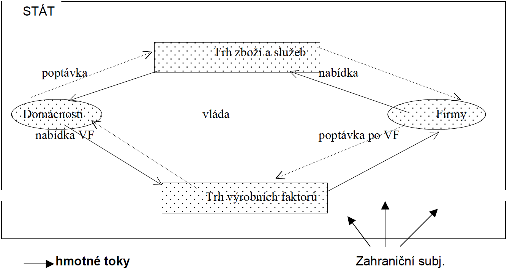

Předmět stanovuje §1 odstavec 2 Občanského zákoníku, respektive stanovoval za účinnosti starého Občanského zákoníku majetkové vztahy FO a PO, majetkové vztahy mezi těmito osobami a státem, jakož i vztahy vyplývající z práva na ochranu osob, pokud tyto občanskoprávní vztahy neupravují jiné zákony . Nově lze definovat předmět občanského práva hmotného jako: Občanské právo lze vymezit jako obecné soukromé právo, jehož předmětem jsou osobní, rodinná a majetková práva a povinnosti subjektivní povahy, které se vztahují na všechny osoby občanského práva a na všechny občanskoprávní záležitosti, jež se mezi nimi navzájem příznačně realizují na zásadách jejich autonomie vůle a rovného (rozuměj hmotněprávního) postavení jako nejvýraznějších projevů jejich svobody, důstojnosti a rovnosti v soukromém právu.
Prameny
Ve stejné publikaci Občanské právo hmotné od Wolters Kluwer.
Systém
Ibid.
Systematika občanského zákoníku
Ibid.
Dispozitivní a kogentní normy v občanském zákoníku
|——————————| | Vysvětlení a Poznámky | |——————————|
Rozdíl mezi právní osobností a svéprávností.
Právní osobnosti ani svéprávnosti se nikdo nemůže vzdát. 4
Podpůrná opatření při narušení schopnosti zletilého právně jednat
Předběžné prohlášení
Nápomoc při rozhodování
Zastoupení členem domácnosti
Omezení svéprávnosti
Koblížek.
|————————————–| | Zdroje a poznámky pod čarou | |————————————–|
|———| | Úkoly | |———|
§ 118 - 435
|————–| | Paragrafy | |————–|
§ 118 - 435
|——————————| | Vysvětlení a Poznámky | |——————————|
|————————————–| | Zdroje a poznámky pod čarou | |————————————–|
|———| | Úkoly | |———|
§ 436 - 488
|————–| | Paragrafy | |————–|
§ 436 - 488
|——————————| | Vysvětlení a Poznámky | |——————————|
|————————————–| | Zdroje a poznámky pod čarou | |————————————–|
|———| | Úkoly | |———|
|————–| | Paragrafy | |————–|
|——————————| | Vysvětlení a Poznámky | |——————————|
|————————————–| | Zdroje a poznámky pod čarou | |————————————–|
|———| | Úkoly | |———|
|————–| | Paragrafy | |————–|
|——————————| | Vysvětlení a Poznámky | |——————————|
|————————————–| | Zdroje a poznámky pod čarou | |————————————–|
|———| | Úkoly | |———|
|————–| | Paragrafy | |————–|
|——————————| | Vysvětlení a Poznámky | |——————————|
|————————————–| | Zdroje a poznámky pod čarou | |————————————–|
|———| | Úkoly | |———|
|————–| | Paragrafy | |————–|
|——————————| | Vysvětlení a Poznámky | |——————————|
|————————————–| | Zdroje a poznámky pod čarou | |————————————–|
|———| | Úkoly | |———|
|————–| | Paragrafy | |————–|
|——————————| | Vysvětlení a Poznámky | |——————————|
|————————————–| | Zdroje a poznámky pod čarou | |————————————–|
|———| | Úkoly | |———|
|————–| | Paragrafy | |————–|
|——————————| | Vysvětlení a Poznámky | |——————————|
|————————————–| | Zdroje a poznámky pod čarou | |————————————–|
|———| | Úkoly | |———|
|————–| | Paragrafy | |————–|
|——————————| | Vysvětlení a Poznámky | |——————————|
|————————————–| | Zdroje a poznámky pod čarou | |————————————–|
|———| | Úkoly | |———|
|————–| | Paragrafy | |————–|
|——————————| | Vysvětlení a Poznámky | |——————————|
|————————————–| | Zdroje a poznámky pod čarou | |————————————–|
|———| | Úkoly | |———|
|————–| | Paragrafy | |————–|
|——————————| | Vysvětlení a Poznámky | |——————————|
|————————————–| | Zdroje a poznámky pod čarou | |————————————–|
|———| | Úkoly | |———|
|————–| | Paragrafy | |————–|
|——————————| | Vysvětlení a Poznámky | |——————————|
|————————————–| | Zdroje a poznámky pod čarou | |————————————–|
|———| | Úkoly | |———|
|————–| | Paragrafy | |————–|
|——————————| | Vysvětlení a Poznámky | |——————————|
|————————————–| | Zdroje a poznámky pod čarou | |————————————–|
|———| | Úkoly | |———|
|————–| | Paragrafy | |————–|
|——————————| | Vysvětlení a Poznámky | |——————————|
|————————————–| | Zdroje a poznámky pod čarou | |————————————–|
|———| | Úkoly | |———|
|————–| | Paragrafy | |————–|
|——————————| | Vysvětlení a Poznámky | |——————————|
|————————————–| | Zdroje a poznámky pod čarou | |————————————–|
|———| | Úkoly | |———|
|————–| | Paragrafy | |————–|
|——————————| | Vysvětlení a Poznámky | |——————————|
|————————————–| | Zdroje a poznámky pod čarou | |————————————–|
|———| | Úkoly | |———|
|————–| | Paragrafy | |————–|
|——————————| | Vysvětlení a Poznámky | |——————————|
|————————————–| | Zdroje a poznámky pod čarou | |————————————–|
|———| | Úkoly | |———|
|————–| | Paragrafy | |————–|
|——————————| | Vysvětlení a Poznámky | |——————————|
|————————————–| | Zdroje a poznámky pod čarou | |————————————–|
|———| | Úkoly | |———|
|————–| | Paragrafy | |————–|
|——————————| | Vysvětlení a Poznámky | |——————————|
|————————————–| | Zdroje a poznámky pod čarou | |————————————–|
|———| | Úkoly | |———|
|————–| | Paragrafy | |————–|
|——————————| | Vysvětlení a Poznámky | |——————————|
|————————————–| | Zdroje a poznámky pod čarou | |————————————–|
|———| | Úkoly | |———|
|————–| | Paragrafy | |————–|
|——————————| | Vysvětlení a Poznámky | |——————————|
|————————————–| | Zdroje a poznámky pod čarou | |————————————–|
|———| | Úkoly | |———|
|————–| | Paragrafy | |————–|
|——————————| | Vysvětlení a Poznámky | |——————————|
|————————————–| | Zdroje a poznámky pod čarou | |————————————–|
|———| | Úkoly | |———|
|————–| | Paragrafy | |————–|
|——————————| | Vysvětlení a Poznámky | |——————————|
|————————————–| | Zdroje a poznámky pod čarou | |————————————–|
|———| | Úkoly | |———|
|————–| | Paragrafy | |————–|
|——————————| | Vysvětlení a Poznámky | |——————————|
|————————————–| | Zdroje a poznámky pod čarou | |————————————–|
|———| | Úkoly | |———|
|————–| | Paragrafy | |————–|
|——————————| | Vysvětlení a Poznámky | |——————————|
|————————————–| | Zdroje a poznámky pod čarou | |————————————–|
|———| | Úkoly | |———|
|————–| | Paragrafy | |————–|
|——————————| | Vysvětlení a Poznámky | |——————————|
|————————————–| | Zdroje a poznámky pod čarou | |————————————–|
|———| | Úkoly | |———|
|————–| | Paragrafy | |————–|
|——————————| | Vysvětlení a Poznámky | |——————————|
|————————————–| | Zdroje a poznámky pod čarou | |————————————–|
|———| | Úkoly | |———|
|————–| | Paragrafy | |————–|
|——————————| | Vysvětlení a Poznámky | |——————————|
|————————————–| | Zdroje a poznámky pod čarou | |————————————–|
Obchodní právo
|———| | Úkoly | |———|
|————–| | Paragrafy | |————–|
|——————————| | Vysvětlení a Poznámky | |——————————|
|————————————–| | Zdroje a poznámky pod čarou | |————————————–|
|———| | Úkoly | |———|
|————–| | Paragrafy | |————–|
|——————————| | Vysvětlení a Poznámky | |——————————|
|————————————–| | Zdroje a poznámky pod čarou | |————————————–|
|———| | Úkoly | |———|
|————–| | Paragrafy | |————–|
|——————————| | Vysvětlení a Poznámky | |——————————|
|————————————–| | Zdroje a poznámky pod čarou | |————————————–|
|———| | Úkoly | |———|
|————–| | Paragrafy | |————–|
|——————————| | Vysvětlení a Poznámky | |——————————|
|————————————–| | Zdroje a poznámky pod čarou | |————————————–|
|———| | Úkoly | |———|
|————–| | Paragrafy | |————–|
|——————————| | Vysvětlení a Poznámky | |——————————|
|————————————–| | Zdroje a poznámky pod čarou | |————————————–|
|———| | Úkoly | |———|
|————–| | Paragrafy | |————–|
|——————————| | Vysvětlení a Poznámky | |——————————|
|————————————–| | Zdroje a poznámky pod čarou | |————————————–|
|———| | Úkoly | |———|
|————–| | Paragrafy | |————–|
|——————————| | Vysvětlení a Poznámky | |——————————|
|————————————–| | Zdroje a poznámky pod čarou | |————————————–|
|———| | Úkoly | |———|
|————–| | Paragrafy | |————–|
|——————————| | Vysvětlení a Poznámky | |——————————|
|————————————–| | Zdroje a poznámky pod čarou | |————————————–|
|———| | Úkoly | |———|
|————–| | Paragrafy | |————–|
|——————————| | Vysvětlení a Poznámky | |——————————|
|————————————–| | Zdroje a poznámky pod čarou | |————————————–|
|———| | Úkoly | |———|
|————–| | Paragrafy | |————–|
|——————————| | Vysvětlení a Poznámky | |——————————|
|————————————–| | Zdroje a poznámky pod čarou | |————————————–|
|———| | Úkoly | |———|
|————–| | Paragrafy | |————–|
|——————————| | Vysvětlení a Poznámky | |——————————|
|————————————–| | Zdroje a poznámky pod čarou | |————————————–|
|———| | Úkoly | |———|
|————–| | Paragrafy | |————–|
|——————————| | Vysvětlení a Poznámky | |——————————|
|————————————–| | Zdroje a poznámky pod čarou | |————————————–|
|———| | Úkoly | |———|
|————–| | Paragrafy | |————–|
|——————————| | Vysvětlení a Poznámky | |——————————|
|————————————–| | Zdroje a poznámky pod čarou | |————————————–|
|———| | Úkoly | |———|
|————–| | Paragrafy | |————–|
|——————————| | Vysvětlení a Poznámky | |——————————|
|————————————–| | Zdroje a poznámky pod čarou | |————————————–|
|———| | Úkoly | |———|
|————–| | Paragrafy | |————–|
|——————————| | Vysvětlení a Poznámky | |——————————|
|————————————–| | Zdroje a poznámky pod čarou | |————————————–|
|———| | Úkoly | |———|
|————–| | Paragrafy | |————–|
|——————————| | Vysvětlení a Poznámky | |——————————|
|————————————–| | Zdroje a poznámky pod čarou | |————————————–|
|———| | Úkoly | |———|
|————–| | Paragrafy | |————–|
|——————————| | Vysvětlení a Poznámky | |——————————|
|————————————–| | Zdroje a poznámky pod čarou | |————————————–|
|———| | Úkoly | |———|
|————–| | Paragrafy | |————–|
|——————————| | Vysvětlení a Poznámky | |——————————|
|————————————–| | Zdroje a poznámky pod čarou | |————————————–|
|———| | Úkoly | |———|
|————–| | Paragrafy | |————–|
|——————————| | Vysvětlení a Poznámky | |——————————|
|————————————–| | Zdroje a poznámky pod čarou | |————————————–|
|———| | Úkoly | |———|
|————–| | Paragrafy | |————–|
|——————————| | Vysvětlení a Poznámky | |——————————|
|————————————–| | Zdroje a poznámky pod čarou | |————————————–|
|———| | Úkoly | |———|
|————–| | Paragrafy | |————–|
|——————————| | Vysvětlení a Poznámky | |——————————|
|————————————–| | Zdroje a poznámky pod čarou | |————————————–|
|———| | Úkoly | |———|
|————–| | Paragrafy | |————–|
|——————————| | Vysvětlení a Poznámky | |——————————|
|————————————–| | Zdroje a poznámky pod čarou | |————————————–|
|———| | Úkoly | |———|
|————–| | Paragrafy | |————–|
|——————————| | Vysvětlení a Poznámky | |——————————|
|————————————–| | Zdroje a poznámky pod čarou | |————————————–|
|———| | Úkoly | |———|
|————–| | Paragrafy | |————–|
|——————————| | Vysvětlení a Poznámky | |——————————|
|————————————–| | Zdroje a poznámky pod čarou | |————————————–|
|———| | Úkoly | |———|
|————–| | Paragrafy | |————–|
|——————————| | Vysvětlení a Poznámky | |——————————|
|————————————–| | Zdroje a poznámky pod čarou | |————————————–|
|———| | Úkoly | |———|
|————–| | Paragrafy | |————–|
|——————————| | Vysvětlení a Poznámky | |——————————|
|————————————–| | Zdroje a poznámky pod čarou | |————————————–|
|———| | Úkoly | |———|
|————–| | Paragrafy | |————–|
|——————————| | Vysvětlení a Poznámky | |——————————|
|————————————–| | Zdroje a poznámky pod čarou | |————————————–|
|———| | Úkoly | |———|
|————–| | Paragrafy | |————–|
|——————————| | Vysvětlení a Poznámky | |——————————|
|————————————–| | Zdroje a poznámky pod čarou | |————————————–|
|———| | Úkoly | |———|
|————–| | Paragrafy | |————–|
|——————————| | Vysvětlení a Poznámky | |——————————|
|————————————–| | Zdroje a poznámky pod čarou | |————————————–|
|———| | Úkoly | |———|
|————–| | Paragrafy | |————–|
|——————————| | Vysvětlení a Poznámky | |——————————|
|————————————–| | Zdroje a poznámky pod čarou | |————————————–|
Ekonomika a podnikové finance
|———| | Úkoly | |———|
Rozhodování ekonomických subjektů
Teoretické model ekonomických subjektů
Ekonomický koloběh
|——————————| | Vysvětlení a Poznámky | |——————————|
Ekonomie
Studuje chování jednotlivců, je to věda o lidském jednání, respektive o rozhodování ekonomických subjektů v různých ekonomických situacích, předmětem zkoumání je ekonomika.
Není objektivně měřitelná, je to společenská věda.
Ekonomie se zabývá racionálním rozhodováním lidí v podmínkách vzácnosti - tuto racionalitu nenalezneme ve volbě cílů, ale ve volbě prostředků k dosažení cílů (jinak by se dalo rovněž říci, že Ekonomie je věda o tom, jak se ekonomické subjekty chovají (rozhodují) při využívání vzácných zdrojů, které mají alternativní využití).
Pokud příležitosti plně využijí zdroj, je takový zdroj vzácný, člověk řeší problematiku efektivní alokace vzácného zdroje. Pokud zdroj není vzácný, dá se na něj pohlížet jako na volný zdroj (Existují i volné a veřejné statky).
Racionální volba: jak mám rozdělit svůj vzácný zdroj mezi příležitosti, abych dosáhl maximálního prospěchu?
Ekonomie založila pojem člověka ekonomického (homo oeconomicus) - člověk snažící se chovat racionálně (ekonomicky), tj. Maximalizovat svůj užitek a minimalizovat své úsilí.
Ekonomie se člení na:
Makroekonomii - Studuje ekonomiku jako celek a zabývá se jevy jako nezaměstnanost, inflace a hrubý domácí produkt.
Mikroekonomii - Zkoumá chování jednotlivých ekonomických subjektů spotřebitelé (domácnosti) a podniky (firmy) a trhy a jejich vztahy, tedy například rozhodování lidí při uspokojování různých potřeb, chování firem.
Ekonomie (věda) a ekonomika (souhrn hospodářských činností ekonomických subjektů, které tyto subjekty vykonávají za účelem uspokojení svých potřeb).
Když jsou veškeré ekonomické zdroje plně využity, nelze již vyrobit nic dalšího - jedinným způsobem, jak zvýšit výrobu určitého statku, je snížit výrobu něčeho jiného - hranice produkčních možností.
Další dodatečné informace, blížeji popsáno pak také v distanční opoře na stranně 4 (například používané metody a tak podobně) tady:
Předmět ekonomie jako vědní disciplíny = studium:
Vzácnosti (omezenosti) zdrojů (x neomezenosti potřeb)
Volby (rozhodování)
Přístupy k ekonomii
Pozitivní ekonomie - zkoumá svět takový, jaký je.
Normativní ekonomie - zkoumá svět takový, jaký by měl dle jejího pohledu být.
Rozhodování ekonomických subjektů
Člověk ekonomický se řídí jediným cílem - maximalizovat svůj užitek (uspokojení) a minimalizuje náklady.
Průměrné (celkové) uspokojení vs. Mezní uspokojení (užitek, přírůstek uspokojení).
Pokud chceme rozdělit svůj vzácný zdroj (třeba čas nebo peníze) mezi více příležitostí, porovnáváme důsledky uspokojení z těchto příležitostí.
V kardinalistické teorii jasně stanoveným číselným užitkem, v rámci ordinalistické teorie za pomocí indiferenčních křivek - křivka v grafu je konvexní.
Hranice produkčních možností ukazuje všechny možné kombinace dvou výrobků, které je možné získat s daným zdrojem (s danými zdroji) - křivka v fragu je konkávní. Toto v kombinaci s uspokojením (ať už osobním, nebo ve smyslu za jaký produkt dostane více peněž) určuje optimální bod na hranici produkčních možností - bod v němž bude přírůstek uspokojení z jednoho výrobku pokud možno stejný jako přírůstek uspokojení z druhého výrobku.
Zákon klesajícího výnosu - vlastnost výrobního procesu, u kterého mezní produkt každého výrobního faktoru klesá s přidáním každé další jednotky tohoto faktoru, pokud ostatní výrobní faktory zůstanou na stejné úrovni. Jedná se tedy v podstatě o situaci, kdy každý další výrobní faktor například na poli (o nezměněné velikosti), přičemž za výrobní faktor lze považovat třeba pracovníka na sklizeň přinese menší mezní produkt, než pracovník na sklizeň předchozí.
Lidé se chovají v souladu s ekonomickými zákony, i když tyto zákony neznají a nikdy je nestudovali. (Jedná se zkrátka o princip chybou se učíš, pokud by se tak nechovali, tak by brzi poznali, že si škodí.)
Racionalita tak nespočívá v tom, že je člověk ekonomický neomylný, ale že systematicky neopakuje chyby, nýbrž se z nich učí a napravuje je.
Člověk dále sleduje vlastní zájem, tento vlastní zájem je však v souladu s obecným zájmem. Racionální chování jednotlivce tedy vede k efektivnímu výsledku. Adam Smith popsal v díle Pojednání o podstatě a původu bohatství národů z roku 1776 o takzvané neviditelné ruce trhu. Tato neviditelná ruka trhu slaďuje zájmy jednotlivců se zájmy společnosti, neviditelná ruka trhu spočívá v tržních cenách.
V tržní ekonomice svoboná směna a tržní ceny zajišťují soulad mezi prospěchem jednotlivce a společným prospěchem. Ceny a zisk vedou výrobce k tomu, aby dělali to, co chtějí spotřebitelé. Přestože výrobcům vůbec nejde o spotřebitele ale o vlastní zisky. (Zákon nabídky a poptávky.)
Kvůli neviditelné ruce trhu tak nemusí existovat žádná centrální autorita předávající informace co kdo potřebujeme, díky dělbě práce a neviditelné ruce trhu je zajištěno, že všichni dokážeme spolupracovat a spolufungovat v tržní ekonomice, tak, že na konci veškerých procesů vznikají věci a služby, který každý z nás chce. (Záleží tedy na měnících preferencích spotřebitelů, v měnících se výrobních technologiích, nebo v měnící se vzácnosti různých zdrojů, lidé na tyto změny reagují a přizpůsobují se jim ve smyslu co mají vyrábět a spotřebovávat, kde to mají prodávat a kupovat, do čeho mají investovat.) Tyto informace sedimentují pouze v cenách.
Funkce cen:
Informační: poskytuje informace výrobcům a zákazníkům viz předchozí bod. a signalizuje hodnotu, kterou společnost v daném statku vidí i náklady na jeho výrobu ( = jeho relativní vzácnost)
Motivační: například v případě růstu cen motivuje výrobce, aby vyráběli více. Motivuje tedy výrobce, aby vyráběl více a spotřebitele, aby více spotřebovával.
Alokační: vede výrobce k tomu, aby realokovali své výrobní zdroje mezi různá použití efektivně - zákonitě pak musí některým lidem vzniknout ztráty a jiným zisky, poskytování zboží a služeb jednoho typu je vždy na úkor jiného typu, který by se místo něj mohl vyrábět - viz hranice produkčních možností. Vede výrobce tedy k tomu, aby alokovat své zdroje tam, kde ceny převyšují náklady a odvádí je z oblastní, kde se mu již nevyplatí setrvávat, tedy například z oblastí, kde jsou ceny nízké - souvisí se strukturálnímy výkyvy ekonomiky a strukturální nezaměstnaností.
Distribuční: funkce ceny spočívá v tom, že cena je nástrojem rozdělování zboží mezi lidi. Zboží se rozdělí mezi spotřebitele podle jejich ochoty platit. Zboží získá ten, kdo bude schopný za něj zaplatit nejvíce, tedy ten, kdo z něho bude mít největší užitek a nejefektivněji ho využije. -> systém aukce - vede k maximálnímu zhodnocení ekonomických zdrojů. Rovněž odpovídá na otázku v rámci tržně-smíšeného ekonomického modelu komu / jak rozdělit.
(Hodnototvorná funkce): peněžní ocenění hodnoty zboží a služem, osobně tuto funkci považuji za součást funkce informační.
Ceny se nepohybují nahoru a dolů samy od sebe, ale jsou to obchodníci a spekulatni, které je uvádějí do pohybu. Například ve smyslu mezinárodní arbitráže (nakupování zboží ve státě, kde je levnější a jeho následný prodej tam, kde jedražší), ta prosazuje zákon jediné ceny. Díky tomuto je tak přenos informací za pomoci ceny mnohem rychlejší.
Teoretické modely ekonomických systémů * Distanční opora popisuje všechny 4, viz distanční opora * Jedná se tedy o způsoby, kterými společnost jako celek řeší základní ekonomické otázky, nejzákladnější ekonomickou otázkou je, jakým způsobem společnost rozděluje vzácné zdroje. * Dalším základním ekonomickým problémem (otázkou) je jak existující zdroje alokovat. * Těmito základními ekonomickými, které se týkají nalezení systému, který umožňuje spojovat síly subjektů na trhu a efektivně využívat dostupné zdroje, otázkami jsou: * Co a kolik se má ve společnosti vyrábět a čeho se má společnost vzdát, co se má dovézt ze zahraničí * Jak vyrábět jakou technologií a s jakými faktory práce (práce, půda, přírodní zdroje, kapitál) * Jak se rozdělí to co bylo vyrobeno, neboť nelze vyprodukovat dostatek statků pro všechny, rozdělování může probíhat podle různých klíčů (například stranická příslušnost, urozenost, dnes probíhá na základě distribuční funkce peněz, je tedy rozdělováno těm, kteří si to mohou dovolit koupit, tato funkce je trochu narušena vládními zásahy do ekonomiky a přerozdělováním) * Základní kategorie jsou: * Zvyková ekonomika: rigidní, řešení ekonomických otázek na základě zvyků a tradic, primitivní, ekonomický output dostává především náčelník, nebo velký vlastník půdy. Volba povolání vyhází z rodinné nebo etnické tradice, málo se produkuje, je toho málo k dispozici. Dělba práce uvnitř relativně malé skupiny, co a kolik vyrobit rozhodoval náčelník nebo rada starších na základě zkušeností s předchozími generacemi. Členové skupiny pracovali podle svých schopností ve prospěch všech a podíl na vyrobených statcích a službách byl určen náčelníkem. * Centrálně řízená ekonomika: o odpovědích na základní ekonomické otázky rozhoduje nějaká centralizovaná autorita, především vláda. Centrální autorita stanovuje kvóty pro výrobu, stanovuje ceny a rovněž přerozděluje ekonomický output mezi obyvatele. Kapitálové statky jsou vlastněny státem. Omezená konkurence díky vysoké koncentraci výroby a monopolizaci ekonomiky. Je značně neefektivní a snadno zneužitelná při přerozdělování. Výhodou je možnost rychlé mobilizace zdrojů v případě přírodní katastrofy či války. * Tržní systém: na ekonomické otázky odpovídají jednotlivci na základě svých rozhodnutí a samozřejmě i externality. Systém je založen na samostatném (decentralizovaném) rozhodování ekonomických subjektů. Rozhodování je založeno na cenách, směně, neviditelné ruce trhu (tedy ceně) a laissez faire - stát tedy nezasahuje do hospodářství a nesnaží se ho řídit. Výrobní faktory jsou vlastněny soukromně, klíčovou úlohu o základních ekonomických otázkách hrají v tomto systému trhy, ne kterých ceny vznikají. Podstatně efektivnější, než dva předchozí systémy. Chod tržní ekonomiky je stimulován a poháněn touhou po zisku, jedná se tedy o jakýsi ziskový motiv. Nevýhodami jsou nemožnost přerozdělování těm, kteří například nemohou pracovat a řešení selhání trhu. * Smíšený systém: spojuje trh se zásahy vlády do ekonomiky. Převažuje ve většině moderních ekonomik. Trh je stále nejdůležitějším faktorem, ale stát do ekonomiky může zasahovat a korigovat ji (fiskální poliitka státu a monetární politika národních bank). Výhodou jest, že umožňuje přerozdělování a korigování ze strany státu. * Základem ekonomických sytémů je tedy charakter vlastnictví, dělí se podle způsobů jak společnost odpovídá na otázku co-jak-pro-koho. * Ve vztahu k ekonomickým proudům se dá řící, že centrálně plánovaná ekonomika vychází například z Marxismu, tržní systém vychází z liberálních směrů, klasické politické ekonomie a soudobé konzervativní teorie, současná tržně-smíšená ekonomika vychází z názorů Keynese a jeho žáků, německý ordoliberalismus a další.
Ekonomický koloběh - ukazuje vztahy mezi ekonomickými subjekty, neboť ty zastávají různé role (pracují, vyrábějí, nakupují a prodávají, najímají a pronajímají…), samotný koloběh pak zachycuje vzájemné vztahy mezi jednotlivými subjekty.
Záleží na tom, kolik sektorů uvažujeme (dva, tři, nebo čtyři).
Nejzákladnějším případem je dvousektorová ekonomika složená ze sektoru domácností a ze sektoru firem.
Východiskem pro výrobu jsou výrobní faktory, tedy půda, práce a kapitál + podnikatelské schopnosti (respektive čtvrtý faktor - nehmotný kapitál, lidský, intelektuální, sociální a plus právě ty podnikatelské schopnosti). S využitím výrobních faktorů se vyrábějí statky (zboží a služby). Tyto výrobní faktory jsou ve vlastnictví domácností a ty je za peníze pronajímají firmám. Tyto peníze ve formě mezd, platů, renty, úroků (dividendů), zisku , které domácnosti od firem utží se nazývají důchody domácností.
Za důchody domácností pak domácnosti od firem nakupují na trhu zboží a služeb jednotlivé statky, tyto výdaje se nazývají spotřebitelské výdaje / spotřeba domácností. Peníze, které firmy dostanou od domácností jsou příjmy firem, za tyto příjmy si pak firmy mohou opět od domácností najímat výrobní faktory. Firmy takto získané peníze rovněž používají k vytváření nových výrobních kapacit -> zvyšuje se poptávka po výrobních faktorech a zvyšuje se produkce. Do této kategories firem také rovněž spadají finanční podniky - banky, spořitelny, pojišťovny a tak dále, ty jen převádějí peníze od těch, kteří úspory vyttvářejí k těm, kteří si je půjčují - fungují zejména na finanních trzích.
Ekonomika funguje jako nepřetržitý koloběh.
Třísektor obsahuje i stát - ten kontroluje, nastavuje rovné prostředí a daní a rovněž se účastní na celém koloběhu (dal by se považovat jako firma), čtyřsektor i zahraničí, tedy export a import a investice a dividendy, obecně tedy cizinci kupují to co se tady vyrobí - tedy poskytují národnímu hospodářství kapitál, a naopak využívají ve svých ekonomikách vyvážený domácí kapitál.
Obchoduje se standardně na třech typech trhů v rámci ekonomického koloběhu:
Trh zboží a služeb
Trh výrobních faktorů
Peněžní (finanční) trh
Graficky znázorněno v obrázku v další kapitole (Toky v ekonomice)
Mezi těmito trhy probíhají hmotné a finanční toky
Model tržního hospodářství v systému právního státu
Níže vyobrazený koloběh je úplným koloběhem (jsou zahrnuty všechny 4 sektory, pokud bychom však ignorovali stát a zahraničí, jednalo by se o jednoduchý koloběh)

Jednoduchý koloběh:
Firmy a domácnosti v rovném postavení, zisky z trhu zboží a služeb jdou přímo firmám, zisky z výrobních faktorů přímo domácnostem, neexistence státu a zahraničí (dvousektor, který je uzavřenou ekonomikou), neexistují finanční instituce.
Úplný koloběh:
Realističtější model, zahrnuje i třetí a čtvrtý sektor. Předpokládá, že domácnosti mohou svůj důchod buď utratit, nebo i uspořit. Obsahuje finanční společnosti, u kterých domácnosti spoří, ty naspořené prostředky půjčují firmám na rozšiřování a inovace, mohou tedy rozšířit svoji výrobu (přispívá k ekonomickému růstu a bohatnutí společnosti).
Stát pak odčerpává nějaké prostředky z finančních toků v podobě daní a ostatních ze zákona povinných plateb, poukazuje domácnostem transferové platby a firmám dotace.
Transferová platba: jest platbou neekvivalentní, tzn. stát za ni neočekává žádné odpovídající plnění, jedná se tak například o sociální dávky, důchody a tak podobně, většinou se jedná o takzvané mandatorní výdaje.
Zahrnuje rovněž zahraničí (uvažujeme obchodní bilanci), tzn. toky kapitálu ze zahraničí a toky kapitálu do zahraničí.
V rámci ekonomického koloběhu lze hovořit o jeho rovnováze a nerovnováze. Rovnováha - obecně pokud se veškeré příjmy budou rovna veškerým výdajům. Nerovnováha - pokud se nebudou rovnat, výše národního důchodu tak bude klesat nebo stoupat.
Rovnováha - při rovnosti toho co domácnosti utratí a firmy prodají, tedy toho co firmy utratí za výrobní faktory a prodají za zboží a pokud se úspory domácností rovnají investicím firem v jednoduchém koloběhu. V úplném koloběhu pokud se souhrn investic, státních výdajů na spotřebu zboží a služeb, vývozu zboží a služeb a dovozu kapitálu bude rovnat souhrnu úspor domácností, daňových příjmů státu, dovozu zboží a vývozu kapitálu.
Nerovnováha - pokud se nerovnají, jedná se o nerovnováhu, dle toho pak bude výše národního důchodu klesat, nebo stoupat.
Více viz. v distanční opoře na straně 6, nebo zde.
Národní důchod je čistý domácí produkt po odečtení nepřímých daní z podnikání, jedná se tedy o souhrn příjmů výrobních faktorů na daném území za určité období.
Rovněž lze hovořit o rovnováze agregátní nabídky a poptávky, více v distanční opoře na straně 7. O tu se jedná v případě že se agregátní nabídka rovná agregátní poptávce. Pokud se rovná, nebudou ceny růst ani klesat, ani nebude růst nezaměstnanost = stagflace, v reálu je situace nerovnovážná - mění se ceny a úroveň zaměstnanosti. Pokud bude agregátní poptávka nižší než agregátní nabídka, jedná se o deflační mezeru = deflace hodnota, o kterou je potřeba zvýšit agregátní poptávku, aby se vyrovnala s agregátní nabídkou. Pokud bude agregátní nabídka nižší než agregátní poptávka, jedná se o inflační mezeru = inflace hodnota, o kterou se musí agregátní poptávka pro dosažení příslušné rovnováhy při stálých cenách snížit.
Domnívám se že v případě AP = AN se bude jednat o nulovou inflaci, v případě AP > AN se bude jednat o inflaci a v případě AP < AN se bude jednat o deflaci.
Inflace - Podporuje investice, protože pokud by se peníze nechali ležet ladem, ztráceli by na hodnotě, je vedlejším produktem zvětšování peněžní báze a zlevňování peněz, o to se snaží centrální banka která se tim snaží udržet ekonomický růst okolo potenciálního produktu, ten ale předem nikdy nelze odhadnout, proto jedna z teorií říká, že za ekonomické cykly může svým rozhodováním i centrální banka s ohledem na velikost peněžní zásoby.
Nulová inflace - není dobrá, neboť zvyšuje reálnou hodnotu dluhů, kvůli tomu mají lidé méně peněz volných k utrácení = zpomalení růstu ekonomiky, dále zvyšuje reálné úrokové míry = menší zájem o peníze, menší množství investic, menší ekonomický růst, odklad spotřeby = menší spotřeba, menší utrácení, menší zisky firem, menší ekonomický růst, indikátor malého ekonomického růstu, nebo dokonce ekonomického poklesu, těžší stanovení cen, neboť se není možné spolehnout na inflační očekávání. rovněž je deflace dobrá pro dlužníky, pokud by byla deflace, hodnota dluhu by se zvyšovala. Inflační očekávání.
Inflační spiral - tlak na zvyšování mezd způsobí tlak na zvyšování cen, to způsobí tlak na zvyšování mezd a tak podobně.
Větší než cílovaná inflace - neefektivní fungování trhů, znesnadňování sestavování dlouhodobých plánů, cenových kalkulací a rozpočtů, brzda produktivity práce kvůli nutnosti přesouvat zdroje od poskytování výrobků a služeb k finančním operacím s cílem zabezpečit se proti ztrátám, nedůvěra v měnu, přesun k naturálním směnám, nejistota ohledně budoucí kupní síly peněz odrazuje od investic a spoření, rovněž může způsobit taxflaci.
Pozitiva inflace - vyšší pružnost trhů, neboť inflace může působit na menší reálné zvyšování mzdy, což je například ve vztahu k nedobrovolné nezaměstnanosti občas potřeba, inflace tedy může působit na reálné snižování mezd a dostat tak trh práce a trh obecně zpět do rovnováhy, mírná inflace rovněž zajistí, že nominální úrokové sazby zůstanou dostatečně vysoké, aby v případě potřeby mohla centrální banka nominální úrokové míry snížit pomocí monetární politiky, jedná se tedy o jakýsi manévrovací prostor centrální banky.
Deflace - Mnoho podobných negativních faktorů jako u nulové inflace, může však být i pozitivní například při technologickém vývoji a snížení nákladů v určitých odvětvích - způsobí větší výrobu za nižší ceny = to způsobí větší spotřebu a pozitivně působí na růst ekonomiky, celková deflace v ekonomice však může působit velké problémy = zdražování dluhů, odkládání spotřeby, menší snaha o investice, neboť peníze se zhodnocují i když doma leží ladem, díky deflaci tak ekonomika může zklouznout i do recese, reálně klesají i zisky firem - ty musí dělat odpovídající opatření - například snižovat obejm výroby, propouštět zaměstnance a tak podobně.
Pokud je inflace způsobená přemírou peněz na trhu, tak deflace je způsobena nedostatkem peněz na trhu.
Stagflace - (past na likviditu), nejhorší možný scénář, jedná se zároveň o stagnaci ekonomiky a zároveň o vysoký růst inflace a vysokou nezaměstnanost, dříve popíralo Keynesiánství a Phillipsova křivka, vedlo ke krizím v souvislosti s ropnými šoky v 70. letech minulého století.
V souvislosti se stagflací se zrodila myšlenka MIltona Friedmana o přirozené míře nezaměstnanosti, problém spočívá v tom, že nezaměstnanost nelze snižovat pod přirozenou míru nezaměstnanosti, neboť to způsobí inflaci, ale nezaměstnanost se vrátí zpět na svojí původní honotu i přes prvotně způsobenou peněžní iluzi a ekonomický růst, ve finále se tedy docílí stejné nezaměstnanosti, ale nově dosažená inflace se ustálí a stane se novým standardem - tvz. novým inflačním očekáváním.
Inflační spirála se zastaví až ve chvíli, kdy se nezaměstnanost ustálí na své přirozené míře.
Vytváření peněz
Peněžní bázi zvyšují komerční banky úvěry, částečně mohou poskytovat větší úvěry když mají větší aktiva, ty může pomocí repo sazby, diskontní sazby, nebo lombardní sazby vytvářet i sama centrální banka, dále může měnit minimální povinné bankovní rezervy (minimální množství peněz, které musí mít banka uložené na účtu u Centrální banky ze všech svých závazků z primárních zdrojů - tedy z vkladů), tím také přispívá ke zlevňování, nebo zdražování peněz.
Oběživo v rámci peněžní báze se dostává do oběhu tím, že banka směňuje svojí likviditu za oběživo, které si pak občané mohou vybírat z bankomatů.
Viz otázka peníze.
Jak bohatne země, ekonomika, jak probíhá hospodářský růst
Viz otázka hospodářský růst
|———| | Úkoly | |———|
Trh a jeho funkce
Teoretické zdůvodnění různých přístupů k trhu
Výsledek potalčení trhu
Definice tržního selhání
Podívat se i na nabídku a poptávku
V souvislosti s nabídkou a poptávkou se podívat i na teorém pavučiny
|——————————| | Vysvětlení a Poznámky | |——————————|
Trh a jeho funce
Trh jest oblastí ekonomiky, ve které dochází k výměně činností mezi jednotlivými ekonomickými subjekty prostřednictvím směny zboží, přičemž prostředek směny bývají standardně peníze, vytváří se na něm cena.
Jedná se tedy o místo, kde se střetává nabídka s poptávkou a kde dochází ke směně zboží a služeb prostřednictvím koupě a prodeje.
V demokratických zemích - tržní systém (smíšený), na kterém existují systém svobodného podnikání a existence soukromého vlastnictví.
Proč společnost bohatne?
Kvůli vzniku a rozvoji trhu (dělba práce a specializace umožnila zvýšení produktivity a efektivity práce a vznik nadproduktu). Rovněž kvůli inovacím.
Trh funguje na základě neviditelné ruky trhu, jehož součástí je lassiez faire (nech plynout), stát však zasahuje (smíšený systém).
Snaha individua o zisk přispívá k blahobytu celé společnosti, neboť tím poskytuje to, co někdo jiný potřebuje.
Vztah mezi výrobce a spotřebitelem sprostředkovává trh.
Každý statek má nějakou směnnou hodnotu: specifickou formou směnné hodnoty je cena, vyjadřuje poměr, ve kterém lze jeden statek směnit za druhý, peníze jsou všeobecný ekvivalent.
Členění trhu
Místní:
Trh místní - například jarmark, trh v jednotlivých městech
Trh národní - například trh v České republice, vznikl rozvojem dělby práce a zvětšením dopravních možností
Trh světový - projevem skutečnosti, že autonomie národních trhů je pouze částečná, uskutečňuje se na něm mezinárodní obchod
Počtu zboží:
Trh dílčí - trh jednoho druhu zboží, například aoutomobilů
Trh agregátní - trh veškerých dílčích trhů, jedná se o makroekonomickou kategorii
Trh individuální - trh jediného kupujícího
Podle typu zboží:
Automobilový, počítačový etc.
Trhy dle ekonomického koloběhu:
Trh zboží a služeb: Je them, na kterém se střetává nabídka a poptávka ve vztahu ke spotřebním statkům.
Finanční trhy: Je trh, na kterém se střetává nabídka a poptávka ve vztahu k finančním prostředkům, cenným papírům a komoditám.
Trh kapitálu, respektive výrobních faktorů: Je trh, na kterém se střetává nabídka a poptávka po výrobních faktorech domácností ze strany firem.
Obecně lze trhy členit dle:
Subjektů
Charakteru statků
Podmínek na trhu dominujících
Stupně organizovanosti nebo regulace
Teritoriálního určení
Podle otevřenosti a možnosti přístupu
Podle stupně elasticity
A podobně…
Subjekty trhu - 3 základní ekonomické subjekty, ty pak vstupují na trh s různými ekonomickými cíly, a to jak na stranně nabídky, tak na stranně poptávky:
Souvisí s ekonomickým koloběhem - tzn. firmy, domácnosti a stát (+ zahraničí, tedy souhrn domácností, firem a vlád, které vstupují na trh zvenčí, tedy ze zahraničí).
Firmy
Vstupují na trh zboží a služeb na straně nabídky a na trh výrobních faktorů na straně poptávky, dále viz ekonomický koloběh
Jejich účelem je maximalizace zisku, jejich odměnou je zisk.
Jsou tvořeny vlastníky výrobních faktorů.
Domácnosti
Jako firmy, jen opačně, dále viz ekonomický koloběh
Jejich účelem je maximalizace užitku, jejich odměnou je důchod.
Stát
Stát působí jako: regulátor - vytváří právní rámce pro fungování tržního mechanismu, subjekt - který může na obou trzích vystupovat jak na straně poptávky, tak i na straně nabídky, může být i v pozici domácností, tedy jako vlastník výrobních faktorů, tak i v pozici firem, výrobce zboží a poskytovatel služeb
Všechny subjekty vstupují na trh a do vzájemných interakcí, to ve svém důsledku vytváří ekonomický, nebo hospodářský, koloběh.
Toky v ekonomice - rovněž souvisí s ekonomickým koloběhem:
Funkce trhu
Nejdokonalešjí regulátor a stimulátor ekonomického rozvoje.
Jeho základní funkcí je optimální alokace zdrojů.
Optimální alokací zdrojů se rozumí takové rozdělení vzácných zdrojů mezi jednotlivé ekonomické subjekty trhu, které umožňují jejich neúččinnější využití s ohledem na potřeby společnosti.
Každý trh musí řešit tři základní otázky (Tržní (cenový) systém):
Co vyrábět: ceny a množství se přizpůsobují tak dlouho, dokud nedojde k tržní rovnováze, kdy nedochází ani k tržnímu přebytku, ani k tržnímu nedostatku, tedy dokud nedojde k bodu, kdy se nabídka střetává s poptávkou - viz teorém pavučiny
Jak vyrábět: cena také určuje, jaké se používají výrobní faktory, tedy za kolik se bude vyrábět, v jaké kvalitě a s jakými technologickými postupy
Pro koho vyrábět: neboli kdo získá vyrobené statky - distribuční funkce ceny
Cena - peněžní ocenění hodnoty zboží a služeb, signalizují hodnotu, kterou ekonomické subjekty v daném statku vidí, i náklady, které je třeba vynaložit, aby určitý statek mohl být vyroben - tj. jeho relativní vzácnost. -> tržní systém - systém cenový, či cenově řízený.
Další funkce trhu a cen jsou shodné s funkcí cen popsanou v první otázce.
Rovnovážná tržní cena - vzniká vzájemným působením nabídky a poptávky, je to cena vyrovnávající nabídku a poptávku - množství statku, které mají spotřebitelé při této ceně zájem koupit a výrobci prodat, je stejná, takže na trhu nevzniká ani nedostatek, ani nadbytek zboží = ideální stav, tržní cena kolem tohoto bodu osciluje = jedná se tedy o bod, ve kterém se protíná křivka nabídky a křivka poptávky, cena okole něj osciluje = jedná se o teorém pavučiny.
To co nemůžeme mít vždycky a v jakémkoliv množstí je pro nás vzácné, opakem jsou volné statky.
Omezené jsou jak přírodní zdroje, tak i lidský čas, tak i produkty lidské práce (statky), aby lidé mohli vyrábět, musí obětovat svůj čas.
Zákon ekonomie času - lidé se snaží zvyšovat svojí produktivitu práce.
Teorie potřeb - každý z nás má jiné potřeby a potřeba je pociťována nedostatkem
Silou, která žene lidi k cílevědomé činnosti, je určitý pocit nedostatku, který se lidi snaží odstranit. Tento pocit = potřeba
Je několik členění potřeb, základní je na:
Potřeby hmotné
Potřeby nehmotné - například přátelství, svoboda, kulturní zážitky
Potřeby zbytné
Potřeby nezbytné
Individuální a kolektivní, individuální jsou všechny potřeby jednotlivce, kolektivními jsou potřeby celku, například tedy obrana státu.
Vrozené a získané
Potřeby uspokojujeme pomocí konzumace statků, koncept vzácnosti zdrojů, které jsou nám subjektivně užitečné. Potřeby lidí uspokojují užitečné komodity - statky.
Uspokojování potřeb je hnací silou ekonomického života.
Členíní statků:
Hmotné: věci
Zboží: Hmotné statky určené pro trh
Nehmotné: například znalosti, vlastnosti, dovednosti
Služby: činnost, která uspokojuje potřebu svým průběhem, lze je charakterizovat jako nehmotné, neskladovatelné a nezkazitelné ekonomické statkya
Volné: vytvořené přírodou, často za ně nemusíme platit, nemusíme se moc bát jejich vyčerpání - voda, vzduch, není potřeba vyvinout zvláštní úsilí
Ekonomické (Vzácné): nejsou běžně k dispozici v přírodě, člověk musí vynaložit jiné statky na to, aby je získal (například svůj čas), často se jedná o výsledky lidské činnosti
Kapitálové - spotřebováváme je, aby jiné statky mohly vzniknout
Spotřební - slouží přímo k uspokojování potřeb
Veřejné statky - jsou poskytovaná zdarma, většinou státem, či samosprávní jednotkou, ale ve skutečnosti je také platíme z daní a dalších odvodů
Člověk k uspokojení potřeb potřebuje jak volné, tak i ekonomické statky
Další informace ke statkům:
Ekonomické statky vznikají jako výsledek (output) ekonomických (výrobních, zhodnocovacích, zpracovatelských) procesů.
Podle druhů procesů lze rozlišovat následující sektory ekonomiky:
Třísektorový model:
Primární - průmysl spojený přímo s přírodními zdroji, například těžba surovin
Sekundární - zpracovatelský průmysl, spojený se zpracováním outputů primárního sektoru
Terciální - poskytování služeb všeho druhu
Pětisektorový model: ve 20. století se rozhodlo, že by se terciální sektor měl dále rozlišovat na:
Kvartérní - věda a výzkum
Kvintérní - vědci, odborníci, vládní úředníci - lidé s vysokými pozicemi a širokými pravomocemi
Rozlišení dle vlastnictví:
Veřejný sektor - vlastněný státem, provozovaný za účelem zajištění nutných služeb státem
Soukromý sektor - vlastněný soukromníky, provozovaný za účelem dosažení zisku
Dobrovolný sektor - neziskový sektor, spojený s občanskou společností
Statky
Doplnit
Hranice produkčních možností
Výrobní faktory jsou omezené
Ekonomická vzácnost výrobních faktorů způsobuje, že se společnost musí rozhodnout jak rozdělit výrobní faktory pro výrobu jednotlivých výrobků
Ekonomika vyrábí efektivně pokud se svou produkcí pohybuje na hranici produkčních možností, nemůže vyrábět více jednoho statku bez toho, aby vyráběle méně jiného statku
Teoretické zdůvodnění různých přístupů k trhu
Doplnit
Merkantilismus - ranný merkantilismus se dá definovat zákazem vývozu peněz ze země, ochranářskou obchodní politikou a podporou vysokých cen. Fungovalo i v době zlatého standardu v Anglii (od roku 1664 do roku 1914).
Důležitou roli hrál vztah mezi obchodní bilancí a reálnými ekonomickými zdroji země.
Merkantilisté tlačili na celkovou aktivní bilanci země a příliv peněz do země (toto považovali za zdroj růstu bohatství), peníze považovali za kapitál.
Aktivní bilance mělo být dosahováno za pomoci:
Cílené struktury vývozu a dovozu,
ochranářské politiky,
kontroly růstu mezd,
podporou vytváření exportních monopolů,
podporou tranzitního obchodu (reexport).
Stát ekonomicky zasahoval.
Kritika:
První směr, který odmýtl merkantilismus byli fyziokraté, nicméně k pravému odstranění merkantilismu došlo ve Velké Británii v průběhu 18. Století, v 19. století byla již pak teorie merkantilismu úplně překonána.
Zásadním nedostatkem je přímý vliv (přímá neúměra) množství peněž v ekonomice na ceny zboží a rovněž množství zboží v ekonomice, které se s ohledem na své vzrůstající množství oproti jiným statkům stává levnější.
Export drahých kovů z jiných zemí a jejich import do dané země tak ve svém důsledku znamenal zlevňování drahých kovů v místě importu a zdražování drahých kovů v místě exportu. Eventuálně se tak stal další export ekonomicky nevýhodným a obchod směřoval k obrácení obchodní bilance.
Klasickou ekonomii - celkové nahrazení merkantilistických systémů představovala klasická politická ekonomie Adama Smitha.
Rozvoj v souvislosti, respektive v období, anglické průmyslové revoluce.
Podporovala ekonomický liberalismus a trine řízení ekonomiky bez státních zásahů.
Důležité pojmy: neviditelná ruka trhu, lassiez faire, ekonomové této teorie chápali hospodářství jako samoregulující se systém ovládaný vlastními zákonitostmi.
Končí na konci 19. století společně s marginalistickou revolucí.
Vznik kvůi technickému rozvoji, vzniku kapitalistické třídy a nefunkci merkantilismu.
Marginalismus:
Monetarismus:
Neoklasicismus:
Nová klasická makroekonomie:
Keynesiánství
Bretton-Woodská konference. Zlatý standard.
Neokeynesiánství:
Postkeynesiánství:
Současné ekonomické směry:
Například postkeynesiánství, ekologická ekonomie, institucionalismus etc.
Jsou 4 typy - konvergující - nejčastější, divergující, stálá a oscilující
Záleží na tvaru křivek nabídky a poptávky.
Určuje jakým způsobem se vyrovnává cena a nabídka ve chvíli, kdy existuje nadprodukce a je stanovena vyšší cena.
Proces je obecně následující: P1,Q1 -> P2,Q2 -> P3,Q3 -> tržní cenová rovnováha, tzn. výrobce mění cenu a nabízené množství v závislosti na poptávce, s každou změnou se přibližuje tržnímu optimu až ho eventuálně dosáhne (v případě konvergující pavučiny).
Tržní selhání
Selhání trhu má 4 (5) základní typy:
Nedokonalá konkurence
Monopolizace, popřípadě oligopol, monopson a tak dále.
Na takovémto trhu jsou větší ceny než na trhu volné konkurence.
Ceny nejsou stanoveny tržně, není tlak na inovace, zkvalitňování, o všem rozhoduje jeden, nebo skupina, subjektů.
Řešení: vhodná veřejná politika, tedy například vhodné antitrustové zákony - zákaz praktik omezujících konkurenci
V případě přirozených monopolů - státní regulace cen, případně i jejich služeb může být v praxi také obtížná -> vyžaduje, aby státní orgány zjišťovaly skutečné náklady přirozeného monopolu (dochází pak k jejich nadsazování); ale tato forma je nejčastější - provádí je nezávislé regulační orgány
Soukromé řešení: co nejmenší státní zásahy, řešení nechat na soukromé iniciativě při ochraně práv a náhrady škody.
Externality
V situaci, když nejsou vlastníci ekonomických zdrojů vybaveni zákonnou autoritou k jejich ochranně a využití; trh tyto zdroje nedokáže efektivně využívat; nebo když nejsou vlastnická práva k určitým zdrojům dostatečně jasně vymezena a definována.
Vedlejší účinky soukromých ekonomických aktivit - jejich náklady a výnosy ale neprocházejí trhem a trh je nedokáže ocenit.
Důsledkem externalit je, že ekonomické subjekty nevěnují, respektive subjekty externalit, nevěnují při svém rozhodování dostatečnou pozornost vnějším dopadům své činnosti, protože je k tomu nevedou tržní stimuly - trh hodnotu externalit nedokáže ocenit.
Existují dva typy externalit:
Pozitivní: například zlepšení veřejného prostranství jako vedlejší produkt nějaké investice, stát toto může podporovat za pomocí subvencí.
Negativní: Přesný opak pozitivních externalit, například negativní dopad investice na životní prostředí, stát může omezovat negativní externality například s použitím ekologických daní, poukázek na znečištění etc.
Řešení: existuje několik způsobů řešení:
Regulace: povinnosti zamezit znečišťování, povinnost zkvalitňovat okolí etc. cena za vyprodukovaný statek pak zahrnuje i cenu externality.
Daně: pozitivní ve smyslu snížení daňové zátěže při pozitivních externalitách, nebo jeho zvýšení při negativních externalitách.
Poukázky na znečištění: obdobné jako daně, finanční zatížení negativních externalit.
Soukromé řešení (Coaseův teorém): možnost dosažení řešení za pomocí vyjednávání dotčených stran (například společnosti a občanů), při nízkých nákladech, tedy například transakčních nákladech se mohou strany domluvit na řešením výhodném pro všechny strany, například pokud by strana dotčená externalitou nabídla firmě větší množství určitého statku (například peněz), než by představoval mezní užitek společnosti z investice v dané oblasti, bude to pro ní přiznivější a nabídku přijme, může se tak dosáhnout takzvaného Paretova optima (Paretovo optimum je ekonomický stav, kdy jeden ze seubjektů na trhu již nemůže dosáhnout lepšího postavení bez toho, aby se zhoršilo postavení jiného ekonomického subjektu), tedy například pokud je můj mezní užitek z poslechu hlasité hudby 100 Euro a soused by svojí škoda (tedy jakýsi mezní náklad) z poslechu hlasité hudby ocenil například na 200 Euro, je možné situaci vyřešit tak, že by mi soused dal 150 Euro, tím by snížil svůj mezní náklad o 50 Euro a můj mezní užitek by se zvýšil taky o 50 Euro, oba bychom tedy vydělali, je ale vidět, že kvůli tomuto vyčíslení je absolutně nezbytné, aby byly malé transakční náklady, pokud budou velké, toto vyrovnání již nebude fungovat.
Veřejné statky
Jedná se standardně o statky, které trh nedokáže efektivně poskytovat, ale jsou důležité pro správné fungování společnosti, standardně spadá do úloh státu.
Jedná se například o veřejné osvětlení, národní ochranu - armádu a podobně.
Proč trh tyto statky neposkytuje?
Nelze od jednotlivců vymáhat adekvátní protiplnění a navíc je ze spotřeby daného statku nelze vyloučit (problém černého pasažéra) - firma by tedy měla velký problém se zajišťováním svého vlastního zisku.
Vysoké vstupní investice, které by mohli způsobit následnou vysokou cenu statku pro část společnosti, navíc mají dané statky malou a dlouhotrvající míru návratnosti.
Řešení:
Potenciálně třeba státní monopol, nebo státem zřízený monopol, popřípadě poskytování státních licencí na provozování určitých statků a jejich následnou regulaci.
Nedokonalé informace
Asymetrické informace u jednotlivých ekonomických subjektů.
Řešení je úlohou státu, ten to řeší tak, že na některých trzích je povinně zavedená informovanost, například na kapitálových.
Dalším řešením je zákonná ochrana slabšího, respektive slabší strany, (zákon o ochraně spotřebitele, záruční doba, možnost vrátit výrobek).
Povinná informovanost se uplatňuje i na jiných trzích (například povinnost uvádět složení).
Nedokonalá informovanost může vést například k úspěšnému prodeji nekvalitního zboží nebo služeb kvůli lživému popisu, nebo zamlčení důležitých informací.
Značně souvisí s hospodářskou soutěží a její ochranou.
Vzniká ze dvou důvodů:
Utajená činnost - nepozorovatelnost nákladů ostatních subjektů
Utajené informace - jedna strana trhu má více odborných znalostí nebo informací než druhá
Může vyůstit do degenerace trhu ve smyslu:
Morálního hazardu - informovaný subjekt maximalizuje svůj užitek snižováním užitků jiných, například asymetrie informací mezi zastupovaným subjektem a zastupujícím subjektem
Nepříznivým výběrem - vede k vytěsňování kvalitnějšího zboží z trhů méně kvalitním zbožím, například kvůli jeho maskování jako kvalitní zboží s nižšími vstupními náklady
(Deformací vlivem státních zásahů do cenového mechanismu)
Nejčastěji z důvodu zdanění a přímé regulace cen.
Negativní důsledky cenové regulace:
Vytváří alternativní distribuční mechanismy (známosti, štěstí)
Vysílá falešné signály investorům o potřebě zdrojů v různých oblastech ekonomiky
Řešení: (Úloha státu) -> zkvalitnit rozhodování státu (veřejné zakázky)
Soukromé řešení: co nejnižší zdanění a státní zásahy, vše ponechat na soukromé iniciativě (problém, že to musí chtít většina voličů)
Nabídka a poptávka, její změna a souvislosti
Změna nabídky a poptávky probíhá z důvodů, kvůli kterým se posouvá nabídková nebo potávková křivka, ze strany nabídky je to například v případech změny ceny vstupů, vznik nových ziskových příležitostí - přesun k výrobě jiného produktu, nabídka ostatních produktů proto poklesne, změna kvůli očekávání do budoucna, změna v přístupu na trh - například v případě deregulace nějakého trhu, pokud bychom se podívali na stranu poptávky, tak se jedná o faktory, které ivlivňují samotnou poptávku, viz další otázka.
V takovémto případě vznikne nový rovnovážný bod na trhu a pomocí změny cen, nákladů a nabízeného množství, společně s poptávkou se trh dostane do nového rovnovážného bodu, najde si tedy novou tržní cenu.
Ještě něco k nabídce:
Nabídka na trhu zboží a služeb je množství zboží, kterou jsou výrobci ochotni a schopni prodat za určitou cenu.
Ochoto nabízet se odvíjí především od toho, jak se výrobcům vyplatí statek nabízet, tedy především zda jsou náklady menší než cena, za který se dá daný statek nabízet a v souvislosti s tím i prodat.
Nabídka jako taková pak závisí zejména na:
ceně zboží,
nákladech na výrobu zboží,
nabídce alternativních zdrojů, které by mohl výrobce se stejnými zdroji vyrábět,
nabídce zboží, které výrobce současně vyrábí - souvisí s alokační funkcí ceny,
dalších neočekávaných vlivech na nabídku.
Teoreticky existuje i fixní nabídka - křivka je vertikální,
Dále by se dalo hovořit o zcela elastické nabídce, kdy je křivka horizontální, jako příklad by se dal uvést trh dokonalé konkurence.
Elasticita nabídky - měří pružnost reakce nabídky na změnu ceny
Záleží na tom, jak rychle je schopen výrobce zareagovat na změnu poptávky na trhu (změnu poptávkové křivky), obecně nějaká odvětví reagují rychleji - jsou pržnější a nějaká pomaleji - jsou méně pružnější.
V krátkodobém hledisku jsou obecně všechny nabídky nepružné, v dlouhém období jsou však pružnější.
Výrobci mohou na změny poptávky reagovat i pokud mají zásoby hotových výrobků, standardně se může jednat o levné zboží, které se dá rychle vyrobit a nepodléhá tak rychle zkáze, zásoby tedy ovlivňují pružnost nabídky, ale pro výrobce není efektivní tvořit jich mnoho, neboť na sebe mohou vázat prostředky (kapitál), které by mohli být investovány efektivněji.
Vztah nabídky a poptávky na trhu:
Při konkurenci prodávajícího a spotřebitele každý maximalizuje svůj užitek jiným způsobem, spotřebitel maximalizuje svůj užitek při spotřebe co největšího množství za co nejnižší cenu a výrobce maximalizuje svůj užitek při prodeji co největšího množství statku za co nejvyšší cenu.
Na trhu je proto bod, ve kterém se protíná nabídka a poptávka, tomuto bodu se říká rovnovážná cena, jedná se o cenu která vyhovuje jak prodávajícím, tak i nakupujícím, jedná se o cenu, při které exituje rovnováha mezi množstvím statku, které jsou výrobci za určitou cenu ochotni prodat a mezi množstvím, které jsou ochotni spotřebitelé při určité ceně koupit.
Pokud by cena byla vyšší, než je rovnovážná cena, byl by na trhu přebytek, v opačném případě by byla větší poptávka než je nabídka a zboží by na trhu bylo nedostatek.
Skutečná cena však nikdy nebude rovná rovnovážné ceně, ale bude kolem ní oscilovat - teorém pavučiny.
Při rovnovážné ceně pak část výrobců dosáhne přebytku výrobce a část nakupujících dosáhne přebytku spotřebitele, výrobci, kteří by chtěli prodávat za vyšší cenu, nebo poptávající, kteří by chtěli kupovat za nižší cenu, než je rovnovážná cena pak na trhu budou tvořit neuspokojenou (nerealizovanou) nabídku nebo potávku a musejí hledat své možnosti na alternativních trzích substitutů.
Vliv na nabídku a poptávku mají rovněž vliv i daně, cla, či jiné transakční náklady spojené s tím, aby se zboží dostalo od prodávajícího ke kupujícímu, tyto platí zákazník, ale k výrobci se nikdy nedostanou.
|———| | Úkoly | |———|
Užitek
Blahobyt
Náklady obětované příležitosti
Individuální a tržní poptávka
Poptávka v krátkém a dlouhém období
Elasticita poptávky
|——————————| | Vysvětlení a Poznámky | |——————————|
Užitek
Kolik určitého statku má spotřebitel kupovat a jak má svůj důchod mezi různé statky rozdělit.
Celkový užitek vs. mezní užitek.
Mezní užitek s roztoucí spotřebou klesá - zákon klesajícího mezního užitku.
Celkový užitek - součet mezních užitků.
Racionální spotřebitel není ochoten platit za statek vyšší cenu, než jaký je mezní užitek daného statku. Zvyšuje nákup statku pouze do takového množství, kdy je ještě mezní užitek statku vyšší nebo alespoň roven ceně.
Mezní užitek se oceňuje v penězích.
Spotřebitelův přebytek - pokud koupí něco levněji, než kolik ba za to byl ochoten s ohledem na svůj mezní užitek zaplatit.
Spotřebitelům přebytek je zákonitost, platí vždy, když se spotřebitel chová racionálně, neboť by nekoupil něco, co mu přinese menší užitek, než kolik to něco stojí samo o sobě.
Pro obchodníka - může být vždy minimálně na úrovni mezního užitku pokud smlouvá, pokud jsou stanoveny pevné ceny zákazník má větší šanci, že získá spotřebitelův přebytek.
Blahobyt
Blahobyt obecně: výraz pro takový stav společnosti, její části nebo rodiny, jednotlivce, který umožňuje v nadbytku uspokojovat všechny potřeby.
Ekonomický blahobyt: rovnovážné ceny, které na trhu vznikají, vedou svou alokační funkcí k takovému rozdělení zdrojů, které maximalizuje užitek všech zúčastněných; kupujících i prodávajících.
Ekonomie blahobytu: typická metodika začíná odvozením (nebo předpokladem) funkce sociální péče, kterou lze poté použít k hodnocení ekonomicky proveditelných alokací zdrojů z hlediska sociální péče, kterou představují. Takové funkce obvykle zahrnují opatření ekonomické účinnosti a spravedlnosti, i když novější pokusy o kvantifikaci sociálního blahobytu zahrnovaly širší škálu opatření včetně ekonomické svobody (jako v přístupu založeném na schopnostech).
Náklady obětované příležitosti
Člověk je každý den vystaven rozhodnutí, kterou potřebu uspokojí, a který statek si k tomu vybere.
Čelí tak volbě mezi několika variantami (viz spotřebitelská racionalita)
Při zvolení jedné z variant se ale člověk vzdává variant ostatních, což mu přináší takzvané alternativní náklady.
Alternativní náklady lze chápat jako ušlý užitek.
Hodnotu ušlého zisku z druhé nejpříznivější varianty pak označujeme také jako náklady obětované příležitosti.
Kupováním jednoho statku obětuje člověk jiný statek respektive nějakou jinou příležitost.
Analýza nákladů a výnosů (cost-benefit analýza). Výnosem je získávaný užitek a nákladem je obětovaný užitek.
Dokud je mezní užitek jednoho statku vyšší než mezní užitek druhého statku, snaží se spotřebitel přesunout své zdroje (peníze, volný čas) ze statku s nižším mezním užitkem na statek s vyšším mezním užitkem.
Celkový užitek z obou statků bude maximalizován tehdy, když bude splněna podmínka:
MU jednoho statku / cena daného statku = MU druhého statku / cena druhého statku.
Platí, že spotřebitel bude chtít danou peněžní částku rozdělit mezi ně tak, aby, pokud možno, byla splněna rovnice:
MU1 / P1 = MU2 / P2.
Tato rovnice vyjadřuje podmínku optimálního rozdělení dané peněžní částky mezi dva statky. Z toho vyplývá, jak racionální spotřebitel rozdělí svůj peněžní důchod mezi nákupy různých statků. Toto rozdělení musí splňovat následující podmínku:
MU1 / P1 = MU2 / P2 = MU3 / P3 = MUn / Pn.
Pokud je tato podmínka splněna lze hovořit o optimální spotřebitelské alokaci.
Poptávka
Poptávka ukazuje, jak závisí poptávané množství statku na ceně.
Poptávka je klesající, protože v rámci kardinalistické teorie lze odvodit od mezního užitku, u kterého platí zákon klesajícího mezního užitku, zákazník totiž maximalizuje svůj užitek, respektive je v optimu, když MU = P respektive MU = MC, přičemž logicky P = MC v případě kupovaného statku, tím, že se mezní užitek měří v penězích, lze na osy zanést hodnoty P a Q, tedy stejné hodnoty, které se používají pro zobrazování poptávky, klesající mezní užitek tedy způsobuje klesající poptávku, respektive křivka poptávky kopíruje křivku mezního užitku, v případě nabídky je to obdobné, protože neboť mezní příjem (dalo by se řící mezní užitek) s každým prodaným kusem roste.
Motivem, který ovlivňuje spotřebitelovo chování je:
cena produktu +
preference
celková výše spotřeby
statní zboží, tedy suplementy a komplementy
očekávání příjmu, cen i vkusu
Znázorněna pomocí křivky poptávky.
Křivka poptávky ukazuje, jak se mění kupované množství daného statku v závislosti na jeho ceně. Ovšem při nezměněném důchodu kupujícího a při nezměněné ceně ostatních statků - tedy při stavu ceteris paribus.
Křivka poptávky v zásadě kopíruje křivku mezního užitku - jedná se o zákon klesající poptávky. Každý její bod říká, že cena, kterou spotřebitel platí, odpovídá meznímu užitku statku.
Poptávané množství je množství statku, které spotřebitel při určité ceně poptává, to je klesající funkcí. Zatímco poptávka je celou funkcí, nicméně tato funkce může sama o sobě také klesat, nebo stoupat jejím posunem v grafu. Obecně by sa dalo říci, že poptávka záleží na ceně, nikoliv cena na poptávce, toto je vysloveno například zde tady.
Zákon klesající poptávky - důchodový a substituční efekt
Důchodový efekt: spotřebitel při vyšší ceně kupuje méně statku, protože mu původní částka nestačí na nákup původního množství (které kupoval před zvýšením ceny).
Substituční efekt: spotřebitel při zvýšení ceny statku nakupuje méně tohoto statku, protože jej substituuje (nahrazuje) jinými statky.
Oba tyto efekty způsobují, že poptávka je klesající funkcí ceny, neboli při vyšší ceně kupují spotřebitelé menší množství a při nižší ceně vyšší množství.
Substituty:
Vše nejde substituovat v technickém smyslu, ve spotřebitelském smyslu toho ale lze substituovat většina.
Podstatou spotřebitelské substituce je náhrada jednoho uspokojení jiným uspokojením.
Křivka poptávky ukazuje, jak se mění poptávané množství statku v závislosti na ceně tohoto statku, při ostatních cenách a důchodech neměnných. Zákon klesající poptávky říká, že poptávané množství klesne, když vzroste cena statku a přitom se nezmění ostatní ceny ani důchody.
Cena statku se však nicméně může měnit i tehdy, když probíhá inflace, neboli klesá kupní síla koruny.
Inflace však sama o sobě nemá vliv na poptávané množství statku. Poptávané množství statku se mění pouze tehdy, když se mění jeho cena v poměru k ostatním cenám.
Individuální poptávka, tržní poptávka a poptávka po statku jednoho prodávajícího:
Individuální poptávka: viz předchozí bod.
Tržní poptávka je souhrnná poptávka všech kupujících po daném statku.
Tržní poptávka je součtem individuálních poptávek (poptávek jednotlivých kupujících).
Elasticita tržní poptávky má vliv na výdaje kupujících a tím i na příjmy prodávajících. Výdaje kupujících jsou totiž příjmy (tržbami) prodávajících.
Je-li tržní poptávka neelastická, zvýšení ceny a snížení množství statku bude mít za následek zvýšení výdajů kupujících i příjmu prodávajících.
Je-li tržní poptávka elastická bude mít zvýšení ceny naopak za následek snížení výdajů kupujících i příjmů prodávajících.
Po zanesení do grafu je křivka neelastické poptávky více strmá, než křivka elastické poptávky, která je spíše pložší.
Výrobci tak nedokáží využít nízké elasticity tržní poptávky k tomu, aby zvýšili své příjmy.
Cenová elasticita tržní poptávky není není pro výrobce žádnou užitečnou informací, neboť na konkurenčním trhu, kde je mnoho prodávajících, není jeden prodávající sám o sobě schopen významněji ovlivnit celkové množství statku na trhu a tudíž ani cenu. Pokud by snížil svojí produkci, konkurenti jeho výpadek snadno a ochotně nahradí.
Poptávka po statku jednoho prodávajícího je tak méně strmá a elastičtější než tržní poptávka.
Výrobce ke svému rozhodování nepotřebuje znát tržní poptávku, ale poptávku po svém zboží. Poptávka po statku jednoho prodávajícího je méně strmá a mnohem elastičtější než tržní poptávka. Je to způsobeno rozdílným substitučním efektem: pokud se zvýší cena na celém trhu, u všech výrobců, kupující by museli daný statek nahrazovat jinými statky. Pokud ale zvýše cenu pouze jeden z výrobců, kupující jej nahrazují stejným statkem od jiných výrobců.
Poptávka v krátkém a dlouhém období
Poptávka závisí na spotřebitelových preferencích a na jeho omezeních (důchodu a cenách).
Poptávka po stejném zboží je nicméně jiná v krátkém období a v dlouhém období.
Zvýšení ceny motivuje spotřebitele ke snížení poptávaného množství, nicméně v krátkém období je sníží méně a teprve v dlouhém období je sníží více. V krátkém období je substituce například kvůli našem spotřebním zvyklostem složitější.
Spotřebitelská subsituce si vyžaduje určitý čas. Člověk ekonomický je racionální a přizpůsobivý, je však méně přizpůsobivý v krátkém období.
To ovšem znamená, že křivka poptávky je v krátkém období strmější než v dlouhém období.
Cenová elasticita poptávky
Zákon klesající poptávky nám říká, že zvýší-li se cena statku, sníží se kupované množství statku.
Výdaje jsou násobkem ceny a množství, není tedy jasné, zda se spotřebitelovi výdají zvýší, nebo sníží.
Při růstu ceny mohou spotřebitelovi výdaje na daný statek vzrůst nebo klesnout, záleží na tom, zda růst ceny vyvolá velký nebo malý pokles poptávaného množství.
K měření reakce poptávaného množství na změnu ceny je používána cenová elasticita poptávky, ta udává vztah mezi procentní změnou poptávaného množství a procentní změnou ceny.
Vzorec k výpočtu je:
eˇd = (ZMĚNA Q / Q) / (ZMĚNA P / P)
Je-li změna poptávky v absolutní hodnotě větší než 1 = elastická poptávka, zvýšení ceny o jedno procento vyvolá více než jednoprocentní pokles poptávky po daném statku a sníží se spotřebitolovi výdaje na daný statek.
Je-li elasticita menší než 1 = neelastická poptávka, zvýšení ceny se neprojevý takovým snížením poptávky a spotřebitelé si za statek připlatí.
Pokud je elasticita rovná 1, tak se jedná o jednotkově elastickou poptávku a změna ceny ponechá výdaje na stetek beze změny, procentní změna ceny tedy vyvolá stejnou procentuální změnu poptávky.
Záleží i na dlouhém a krátkém období, některé statky jsou elastické jak v krátkém, tak i v dlouhém období, některé statky jsou však například v krátkém období méně elastické, než v období dlouhém.
Na elasticitu poptávky má vliv zejména to, zda je možné statek substituovat jiným statekem a zda jsou to statky zbytné, nebo nezbytné.
Dokonale elastická a dokonale neelastická poptávka: při dokonale elastické poptávce (například na trhu dokonalé konkurence) se při změně ceny o jakékoliv množství nekonečně změní poptávka směrem dolů nebo nahoru, při dokonale neelastické poptávce se poptávka při jakékoliv změně ceny absolutně nezmění.
Změna samotné poptávky
Je důležité odlišovat od změny poptávaného množství, což je jen posun po křivce.
Nicméně může se měnit i samotná funkce poptávky posouváním po grafu.
Obecně jsou čtyři důvody pro změnu poptávky:
Změna preferencí spotřebitele: pokud se změní preference, změní se i poptávka.
Změna důchodu spotřebitele: pokud se změní spotřebitelův důchod, změní se i poptávka.
Změna ceny komplementu: pokud například vzroste cena komplementu, může se snížit poptávka po jiném statku, jemuž je daný statek komplementem.
Změna ceny substitutu: pokud se například sníží cena substitutu, může to vést ke snížení poptávky o jiný statek.
Očekávání (například pokud očekáváme, že obdržíme nějakou finanční částku, poptávka se zvýší), nebo změna počtu poptávajících. Více informací tady.
Když se mění poptávané množství v závislosti na změně ceny daného statku, pohybuje se spotřebitel podél křivky poptávky. Změna poptávky se však projevuje posunem celé poptávkové křivky. Roste-li poptávka, posouvá se poptávková křivka doprava. Klesá-li poptávka, posouvá se poptávková křivka doleva.
Dodatek: Indiferenční křivky, viz otázka 1 ordinalistický přístup.
Založené na ordinalistické teorii, tedy že užitek není možné přímo měřit, ale že je spotřebitel schopen rozhodnout z čeho má větší užitek bez samotného přiřazení hodnoty, je schopen seřadit z čeho má větší užitek.
Na indeferenční křivce leží kombinace dvou statků, z kterých má spotřebitel stejný užitek, vzhledem k rozpočtovému omezení se snaží dosáhnout užitku, který je na nejvyšší indiferenční křivce a poskytuje mu tedy největší celkový užitek.
Jednotlivé body na křivce se nazývají indiferenční body.
|———| | Úkoly | |———|
Dokonalá konkurence
Nedokonalá konkurence
Monopol
Příčiny jeho vzniku a zachování monopolu v ekonomice
Státem vytvářené monopoly
Regulace monopolů
Oligopol
Monopolistická konkurence
Monopsom a oligopson
|——————————| | Vysvětlení a Poznámky | |——————————|
Dokonalá konkurence
Respektive dokonalý trh.
Poptávka po statku nabízeném na trhu s dokonalou konkurencí je dokonale elastická.
Nepatrné zvýšení ceny se na takovémto trhu projeví ztrátou veškerých zákazníků, zatímco nepatrně snížení ceny se projeví tím, že u daného prodejce budou chtít kupovat daný statek úplně všichni, nicméně prodejce nedokáže uspokojit celkovou agregátní poptávku.
Výrobce tedy nemůže změnami své produkce ovlivnit docilovanou cenu. Pokud toto platí pro všechny výrobce dodávající na daný trh, říkáme o takovém trhu, že je dokonalý (též dokonale konkurenční).
Dokonale elastická nebo neelastická poptávka je poptávkou: kdy i nepatrná změna ceny má nekonečný vliv na odezvu nabídky resp. poptávky, a naopak dokonale neelastická nabídka/poptávka, kdy nabídka nebo poptávka po daném zboží je zcela nezávislá na její ceně.
Tím, že žádný prodejce nedokáže ovlivňovat cenu, jsou všichni výrobci pouze příjemnce rovnovážné ceny, dokážou jí částečně ovlivňovat pouze snižováním svých nákladů, ale kvůli dokonale elastické poptávce ji pak nejsou schopni uspokojit.
Efektivnost tržního rozdělování zdrojů - ekonomická rovnováha je ekonomicky efektivní v tom smyslu, že výroba je produkována při nejmenších možných nákladech.
Podmínky
Podmínky, které musí trh splňovat, aby se dal považovat za dokonale konkurenční jsou:
Dokonalá informovanost kupujících a prodávajících: tato podmínka bývá splňována pouze na územně centralizovaných trzích
Nulové náklady na změnu dodavatele
Homogenní produkt: tzn. stejná kvalita výrobku či pověst firmy, rozhodování je založené pouze na ceně. Na nedokonalých trzích jsou výrobky heterogenní.
Velký počet prodávajících: kteří ovládají pouze velice malou část trhu
Pokud jsou všechny tyto 4 podmínky splněny, pak se jedná o dokonalý trh, pokud alespoň jedna splněna není, tak se jedná o trh nedokonalý, jako další podmínka by se dala zařadit ještě neexistence jakýchkoliv bariér vstupu na trh
Nedokonalá konkurence
Poptávka na trhu s nedokonalou konkurencí není dokonale elastická.
Zvýšením ceny tak sníží poptávané množství, ale ne až na nulu. A snížení ceny nezíská prodejci celý trh, neboť někteří kupující budou stále nakupovat od původních dodavatelů.
Výrobce tak může změnami své produkce do určité míry ovlivnit docilovanou cenu. Takový trh je nedokonalý (též nedokonale konkurenční).
Z hlediska trhů nedokonalé konkurence je ideální monopolistická konkurence, monopoly a oligopoly podléhají regulaci ze strany regulačních orgánů - Ministerstvo financí, Úřad pro ochranu hospodářské soutěže, Energetický regulační úřad, Telekomunikační úřad atd.
Výrobce není pouze příjemcem ceny, ale může jí i tvořit, a to ne pouze snižováním výrobních nákladů, ale klasickými způsoby tvorby ceny (trhy nedokonalé konkurence nejsou dokonale elastické, takže i když bude cena nad tržní rovnovážnou cenou, neznamená to nulovou poptávku po daném statku), druhy tvorby cen jsou následující:
Nákladová: náklady na výrobu + stanovená marže,
Hodnotová: cena je stanovena podle hodnoty, kterou zákaznící v produktu vidí,
Poptávková: cena je stanovena podle poptávky po produktu,
Konkurenční: cena je stanovena podle konkurence a jejich cen na trhu.
Mezní příjem a cenová tvorba na nedokonalém trhu
Mezní příjem: přírůstek celkového příjmu dosažený zvýšením prodeje o jednotku.
Mezní náklady: přírůstek celkových nákladů díky zvýšení prodeje o jednotku.
Fixní a variabilní náklady: variabilní náklady rostou s objemem výroby, napříklady obaly na zboží. Fixní náklady nejsou závislé na objemu výroby, mohou to být například pronájmy prostor.
Výrobce (například penzion) tvoří cenu, zatímco výrobce na dokonalém trhu cenu přijímá.
Ne nedokonalých trzích tedy výrobci tvoří svojí cenu, respektive hledají svojí cenu, tedy hledají takovou cenu, kdy maximalizují svůj zisk (mezní příjem již nemůže více stoupat, naopak začne klesat a celkový příjem je tedy maximalizován). Výrobce tedy maximalizuje zisk při takové ceně, při které se mezní zisk rovná mezním nákladům.
Nedokonalé trhy a informace
Jedna z charakteristik nedokonalých trhů je nedokonalost informování, protože informace jsou vzácné - na jejich získání je nutné vynaložit náklady.
Informace jsou vzácné, ale také užitečné - umožňují získat větší výnos.
Získávání informací stojí čas, to znamená náklady obětované příložitosti, je tedy možné udělat cost-benefit analýzu, největšího zisku založeného na informaci může prodejce (nakupující v případě přebytku spotřebitele) získat, když se mezní náklady rovnají meznímu zisku.
Člověk tedy zůstává nedokonale informovaný, neboť získávání informací stojí peníze a mezní náklady na získávání informací jsou rostoucí a zároveň mezní výnos z informací (výnos z dodatečné informace) je klesající.
Racionální člověk tedy získává jen tolik informací, kdy se mezní výnos z informací rovná mezním nákladům na získávání informací.
Nedokonalosti trhů ve smyslu informací se snižují, když klesají náklady na informace, k tomuto sami často přispívají výrobci reklamou.
Reklama zvyšuje informovanost spotřebitelů, a tím snižuje nedokonalosti trhů. Bez reklamy by byly informace pro spotřebitele vzácnější, nákladnější a trhy by byly nedokonalejší.
Na reklamu je tak možné pohlížet nejen jako na prostředek manipulace, ale taky jako na prostředek zvyšování informační nasycenosti spotřebitelů, kteří na základě těchto informací mohou učinit pro ně lepší rozhodnutí.
Informace a podnikatelé
Je to právě vzácnost informací, která vytváří příležitosti pro podnikání.
Pokud někdo dokáže získávat informace efektivněji, může tuto schopnost přetavit v možnosti podnikání.
Například pokud prodejce objeví levnější zboží v zahraničí (objeví informaci, kterou nikdo jiný nemá), může na ní vydělat tím, že prodá dané zboží na dražším trhu (arbitráž), což ale v konečném důsledku vede k prosazování zákona jedné ceny.
Na trhu pak působí například mnoho zprostředkovatelů, ti všichni vlastně obchodují s informacemi.
Všichni tito prodávající vydělávají na tom, že jsou trhy nedokonalé, že jsou informace vzácné. Nedokonalá informovanost je příčinou toho, že existují mezery na trzích. To jsou dosud nevyužívané příležitosti, které slibují (když je někdo objeví a využije) přinášet ekonomický zisk. Příkladem mezery na trhu je například existence dvou trhů, přičemž jeden je levný a druhý drahý.
Podnikatel je člověk, který objeví mezeru na trhu a využije ji, zaplní tedy danou mezeru zprostředkováním obchodů, spekulacemi nebo výrobou.
Tím, že objevují a zaplňují mezery na nedokonalých trzích, podnikatelé snižují tyto nedokonalosti.
Podnikatelé a inovace
Nejdůležitější podnikatelskými aktivitami jsou inovace.
Inovace je uvedení nového výrobku, služby nebo výrobního postupu na trh.
Standardně se opět jedná o zaplnění mezery na trhu, neboť i zlepšení již stávajících procesů je založené na tom, že na trhu chybí například efektivnější výrobní faktory.
Podnikatelé jsou na trhu průkopníky, odrážejí i technologický vývoj, je to právě objev něčeho nového, který otevírá cestu k velkým ziskům.
Když si další podnikatelé povšimnou jejich úspěchu, opět vstupují na trh a tlačí zisk dolů k nule (tendence zisku klesat k nule), toto podněcuje podnikatele k hledání nových inovací.
Podnikání vzkvétá jen na nedokonalých trzích. Pokud je trh dokonalý, neskýtá žádné příležitosti k podnikání. Na dokonalých trzích jsou lidé dokonale informování, na dokonalých trzích nejsou žádné mezery, jejichž objevení by slibovalo zisky.
Nedokonalé trhy jsou živnou půdou pro podnikatelské hledání, objevování a zlepšování.
Podnikatelé a stát
Když stát vstoupí na dosud neobsazené trhy a zaplní jejich mezery, nedá již podnikatelům šanci, aby je zaplnili sami. Se zaplněním mezer na trzích mizí totiž ziskové příležitosti pro podnikatele.
Problémy: služby a zboží jsou pak často dražší, než by byli v soukromém sektoru, může být nedostatečná, nebo naopak zbytečně velká nabídka, veřejný sektor není motivován ke zlepšování služeb nebo k inovacím.
Cenová diskriminace
Pokud prodávající účtuje jedné skupině lidí jinou cenu, než jiné skupině lidí. Může být nelegální i legální, například slevy pro studenty a důchodce jsou legální, jiné ceny pro černocha a asiata nejsou legální pokud by se zakládaly například pouze na barvě pleti.
Cenová diskriminace je cenovou strategií, která prodávajícímu maximalizuje zisk.
Cenová diskriminace pouze rozděluje výrobek mezi dvě skupiny spotřebitelů s různou poptávkovou funkcí a umožňuje spotřebitelům s nižšími důchody kupovat zboží, které by si jinak možná nemohli dovolit.
Cenovou diskriminaci je možné uskutečnit když:
Trh je nedokonalý, poptávkové křivky po zboží (službě) konkrétního prodávajícího musí být klesající
Na trhu musí být alespoň dvě skupiny spotřebitelů, které mají odlišné poptávkové křivky
Prodávající musí být schopen účtovat dvojí ceny
V roce 1999 rozhodl soud, že účtování dvojí cen (v případě cizinců) je nemorální a odporuje to dobrým mravům.
Při zákazu cenové diskriminace zvýší prodejce cenu skupině, pro kterou měl dříve stanovenou cenu nižší, a sníží ji skupině, pro kterou měl dříve stanovenou cenu vyšší.
Monopol
Na trhu je pouze jeden prodávající.
Zakládní charakteristikou je: nemožnost substituování daného statku ze strany poptávajících - musí za něj buď zaplatit, nebo se bez něj obejít a překážky vstupu na trh pro další nabízející, existují například přírodní, technologické, legislativní-licence, patentové překážky vstupu na trh.
Poptávky bude spíše neelastická kvůli absenci substitučního efektu.
Je nejvzdálenější podmínkám dokonalé soutěže, největší ztráty ekonomické efektivnosti, křivka poptávky po statcích monopolu je shodná s křivkou tržní poptávky.
Určení, zda má firma dominantní postavení na trhu je těžké určit.
Možnosti cenové diskriminace a artificiálního určování cen.
Mezní příjmy monopolu jsou vždy nižší než cena.
Monopol však vždy prodává svoje statky za vyšší cenu než jsou jeho mezní náklady - výhodné pro jeho vlastníky - dosažení vyššího -> monopolního zisku.
Je neefektivní - může například vyrábět málo, kdyby vyráběl víc, tak by to spotřebitelům přineslo větší užitek, než by byly náklady monopolu spojené s větší výrobou, přesto víc nevyrábí, tato neefektivnost je spojena s vyšší cenou.
Příčiny jeho vzniku a zachování monopolu v ekonomice
Výlučná kontrola nad přírodními omezenými zdroji či vstupy - přírodní monopol
Výlučná kontrola nad určitými vstupy výroby
Výrazné úspory z rozsahu výroby (přirozený monopol)
Vzniká kvůli extrémním cenovým barierám vstupu na trh
Například síťové služby
Tyto přirozené monopoly jsou standardně regulovány státem
Patenty
Poskytování státních licencí
Tržně neefektivní: zdroje neefektivnosti jsou například, selhávání tržní motivace, nedostatečný zájem o kvalitu výroby a úrověn poskytovaných služeb zákazníkům.
Státem vytvářené monopoly
Státem zavedené monopoly - buď udělí stát výsadní právo produkovat statek jedné firmě, nebo kvůli existenci právních restrikcí v podobě: patentů, autorských práv (institucionální monopol), licencí, koncesí a podobně.
Státní monopoly, jinak nazývané govopoly: jsou monopoly, které nejenže přímo provozuje stát, ale brání ostatním firmám produkovat stejný nebo podobný statek.
Příklady: tisk a emise peněz, armáda, policie a soudy, státní podniky, pošta, železnice a podobně.
Stát provozuje státní monopoly například z důvodu jejich společenské potřeby, ale tržní neudržitelnosti, národní bezpečnosti a podobně.
Postupnou koncentrací a centralizací kapitálových zdrojů může dosáhnout firma úspor z rozsahu, což dává vzniknout monopolu ekonomické síly, dochází k němu pomocí fůzí a akvizicí, repsketive přátelskému a nepřátelskémupřevzetí firmy, například k tomu může dojít, když jedna společnost nastaví dumpingové ceny a jako důsledek převezme společnost, která nemůže při takto nastavených cenách společnosti konkurovat.
Hlavní kategorie fůzí:
Horizontální fůze - spojení dvou firem působících ve stejné oblasti,
Vertikální fůze - spojení firem působících v různých článcích téhož výrobního procesu,
Konglomerační fůze - spojení podniků, kt. spolu ekonomicky nesouvisejí
Regulace monopolů
Má chránit ekonomiku před neefektivností nedokonalé soutěže.
Tvoří se protimonopolním zákonodárstvím, regulací monopolů, využívání veřejného vlastnictví monopolů (například ve formě státního podniku, nebo akciové společnosti).
Protimonopolní zákonodárství:
Podporuje konkurenci tím, že omezuje jednání vedoucího k její omezování.
Zakazuje smlouvy, které omezují konkurenci firem.
Brání zneužívání dominantního postavení na trhu.
Dohled nad fúzemi a akvizicemi (jedna firma získá druhou).
Další například zákaz dumpingových cen, vyšší zdanění, ekonomická regulace.
Protimonopolní zákony mohou, pokud jsou dobře nastavené, účinně bránit spojování velkých podniků a tím tendenci ke koncentraci tím, že daná spojování jsou pod statáním dohledem.
Veřejná politika tedy může zahrnovat:
Snaha zavést více konkurence do monopolizovaných odvětví – antimonopolní zákony. Antimonopolní zákony poskytují vládě různé možnosti, jak podporovat konkurenci. Vedle zákazu kartelových dohod, zákazu zneužívání monopolního postavení a kontroly fúzí zahrnují také kontrolu státní pomoci a dohled nad veřejnými soutěžemi. Moderní antimonopolní politika nemá za cíl potlačovat koncentrované struktury, rozdělovat velké podniky ani v případě, že jsou v monopolní pozici na trhu. Zasahuje pouze v případě, že této pozice zneužívají. Zneužívání má formu chování firem, resp. takových praktik, dohod, komunikace či kooperace mezi firmami, které vedou k omezení konkurence, k vytváření překážek vstupu na trh, které by jinak neexistovaly. Jelikož však je právě v případě vysoké koncentrace zneužívání monopolní moci a koluze firem pravděpodobnější, je tržní struktura a koncentrace významný indikátor pro antimonopolní politiku.
Regulace chování monopolů – cenová regulace. Toto řešení se používá hlavně v případě přirozených monopolů, např. to mohou být vodárny nebo elektrárny, kdy těmto společnostem není dovoleno prodávat svůj produkt za jakoukoli cenu, ale vláda jejich ceny reguluje.
Přeměna některých soukromých monopolů na monopoly provozované státem (např. pošta). Dalším způsobem řešení monopolů je veřejné vlastnictví. Ekonomové spíše dávají přednost soukromému vlastnictví přirozeného monopolu před vlastnictvím státním, protože soukromí vlastníci jsou motivováni minimalizovat náklady, pokud z toho mají užitek v podobě vyššího zisku. Když se nebude managementu dařit udržovat nízké náklady, mohou ho majitelé propustit. Pokud však odvedou špatnou práci vládní byrokraté, kteří budou provozovat monopol, ztrátu ponesou zákazníci a daňoví poplatníci a ke změně dojde zřejmě až při změně politiků. Jinak řečeno z hlediska optimálního chodu firmy jsou volby méně spolehlivé než motiv zisku.
Nečinnost. Každá z doposud uvedených možností regulace má i své stinné stránky, proto někteří ekonomové uvádějí, že by vláda udělala lépe, kdyby se nesnažila odstranit neefektivnost a žádné regulace cen ani jiné regulace neprováděla.
Oligopol je try, na kterém nejen krátkodobě, ale i dlouhodobě působí jen několik málo firem.
Oligopol může na trhu dlouhodobě přetrvávat v případě, že je optimální velikost firmy značná a zároveň tržní poptávka je (vzhledem k optimální velikosti firem) relativně malá.
Optimální velikostí firmy je velikost, která v dlouhodobém měřítku zajistí, že průměrné náklady na množství poptávaného zboží bude optimální, tzn. Nemá smysl například vyrábět ve velké hale, když je malá poptávka, neboť fixní a variabilní náklady by hnaly mezní cenu a v tom důsledku i průměrnu cenu za jednotku v poměru k poptávanému množství víš, než by mohla být.
Bod 2 tedy umožňuje ziskovou existenci jen několika málo firmám.
Na rozdíl od monopolistické konkurence se na oligopolním trhu ani v dlouhém období nemusí prosazovat tendence k nulovému ekonomickému zisku.
Konkurence ale stále existuje, například ve formědiferenciace nabízených produktů a služeb, firmy mezi sebou mohou vést i cenové války.
Ekonomický zisk je způsoben tím, že se tržní poptávka střetává jen s omezeným počtem firem na trhu.
Každá firma tedy ve svém důsledku dělá jen to, že vyrovnává své mezní náklady s mezním příjmem.
V případě změn na trhu se může na trh dostat další prodejce, který bude taky ziskový, poptávka se střetne s větším počtem firem na trhu a to povede ke snížení cen a ke snížení celkového ekonomického zisku jednotlivých letišť.
Je zajímavé zmínit teorii her, respektive takzvané vězňovo dilema, pokud firmy spolupracují, dosáhnout největších zisků. Může se zde například řadit kartelová dohoda, ta však narušuje hospodářskou soutěž, v Čr jsou takové dohody neplatné.
Oligopol koluzivní - tajná dohoda mezi dvěma či více firmami o stanovení ceny (cenového kartelu), podmínek odbytu a odbytových či nákupních cen, blíží se dominanci, vychází z Teorie her a také z Vězňova dilemata, tedy že při spolupráci dosáhnou všechny strany pro ně přiznivějšího efektu, než kdyby stáli proti sobě.
Monopolistická konkurence
Nejběžnější typ nedokonalého trhu.
Heterogenní výrobek je tvořen blízkými substituty.
Monopolistická konkurence se dá popsat následovně: Jogurt Danissimo vyrábí jen firma Danone, má tedy na něj monopol. Ale tomuto jogurtu zároveň silně konkurují jogurty jiných firem, které jsou jeho blízkými substituty, takže konkurence na trhu jogurté je velmi silná.
Konkurcen ale nemusí spočívat jen v kvalitě, tvaru, modelu nebo obalu, ale například i ve vzdálenosti.
Důležitou vlastností monopolistického trhu je otevřenost trhu. Neexistují tedy žádné bariéry vstupu na trh, na trh může kdykoli přijít nová konkurence. V důsledku toho se zde prosazuje tendence k nulovému ekonomickému zisku (Když budou restaurace dosahovat ekonomický zisk, bude to na takový trh lákat nové podnikatele, kteří budou otevírat noveé restaurace. To bude nakonec snižovat ekonomický zisk restaurací až k nule.)
Rovnováha výrobce na monopolisticky konkurenčním trhu:
Rovnováha výrobce: taková situace, kdy výrobce (při daných nákladových funkcích a při dané poptávce po jejím statku) maximalizuje zisk.
Pro výrobce je optimální (maximálně ziskový) takový rozsah produkce statku, při kterém se mezní příjem rovná mezním nákladům.
Na dokonalém trhu je mezní příjem totožný s cenou, avšak na nedokonalém trhu se mezní příjem ceně nerovná. Jak tedy výrobce na nedokonalém trhu nalezne svou rovnováhu?
Krátkodobá rovnováha:
Rovnováha je krátkodobá v bodě kde se mezní náklady rovnájí mezním příjmům.
Důležité jsou průměrné náklady (průměr mezních nákladů) i ve chvíli, kdyby mezní náklady byl větší, než mezní příjem, dosahuje obchodník zisku, pokud jsou průměrné náklady menší, než celkový zisk za jednu růži.
Dlouhodobá rovnováha:
Ekonomický zisk však like na trh další prodejce. Jejich příchod způsobuje, že se tržní poptávka dělí mezi stále větší počet prodejců.
Poptávka po statku jednoho prodejce se v důsledku toho snižuje - křivka poptávky d se posouvá dolů a s ní se posouvá dolů i křivka mezního příjmu.
Když není dosahováno ekonomického zisku, tedy když se křivka poptávky dotýká křivky průměrných nákladů, přestávají na trh vstupovat další prodejci.
V dlouhodobém období tedy dosahuje zahradník nulového ekonomického zisku: jeho cena se rovná průměrným nákladům.
Firma na nedokonalém trhu prodává za cenu, která je vyšší než mezní náklady. Tím se nedokonalý trh odlišuje od dokonalého trhu, kde se cena rovná mezním nákladům.
Na nedokonalém trhu firma nevyrábí v minimu průměrných nákladů. Tím se nedokonalý trh rovněž odlišuje od dokonalého trhu, kde firmy vyrábějí v minimu průměrných nákladů.
Monopson a Oligopson
V případě monopsonu se jedná o situaci, kdy je na trhu pouze jeden zákazník.
Příklad je například na trhu práce, kde v určité oblasti existuje jen jeden poptávající (zaměstnavatel).
Má plnou kontrolu nad trhem a možnost stanovit tržní cenu.
Neefektivní alokace zdrojů. Typicky se jedná o zdroje do produkce.
Vzniká, když existují bariéry pro vstup na trh pro další potenciální kupující.
Mezi bariéry můžou patřit například: státní licence, patenty, copyrighty, vlastnictví určitých zdrojů, vysoké vstupní náklady, úspory z rozsahu výroby.
Oligopson je případ, kdy je na trhu malé množství kupujících s velkým podílem na trhu.
Poptávka je jen ze strany několika málo firem, prodejci mají problém své zboží nabídnout jiným subjektům.
Mezi poptávající buď soupeřivost, nebo tendence spolupracovat.
Může vznikat například na poli výrobních faktorů, kdy malý počet firem nakupuje výrobní faktory.
Mezi bariéry pro vstup dalších kupujících na trh mohou patřit například: vlastnictví určitých zdrojů, vysoké vstupní náklady, státní licence, zavedené značky a úspory z rozsahu.
Omezuje konkurenci, vede to k nižším a nepružným cenám, převládání necenové konkurence, koluzím (tajné dohody o nákupních cenách, dělení trhu atd.) a tendencím ke spojování firem (fúzím)
|———| | Úkoly | |———|
Trh práce
Nabídka práce
Nezaměstnanost
Pojem
Měření
Druhy
Vztah vývoje ekonomiky a nezaměstnanosti
Okunův zákon
Phillipsova křivka
|——————————| | Vysvětlení a Poznámky | |——————————|
Trh práce, nabídka práce, poptávka po práci
Jedná se o rozhodování, zda pracovat, nebo nepracovat - práci nabízejí zaměstnanci, a zaměstnavatelé jí poptávají jako výrobní faktor.
Práce člověku přináší plat nebo mzdu, či jinou finanční odměnu, nepráce člověku přináší volný čas, z pohledu člověka se tak jedná o porovnání dvou možností, zda pracovat, nebo nepracovat, rozhoduje se podle toho, co mu přináší větší užitek, podle tohoto se i rozhoduje kolik času práci věnuje a kolik již ne.
Stejně jako u spotřeby jiného statku platí zákon klesajícího mezního užitku, mezní užitek z každé další hodiny práce tak pro zaměstnance klesá, respektive klesá mezní užitek, který má člověk z odměny za práci, neboť je touto odměnou stále více nasycenější.
Člověk má rovněž mezní užitek z každé hodiny volného času, ten je ovšem také klesající, pokud se tedy člověk rozhodne pracovat, obětuje mezní užitek svého volného času, jedná se tedy o jakési náklady obětované příležitosti.
Dokud je mezní užitek, který zaměstnanec obětuje menší než mezní užitek, který zaměstnanec získá prací bude ochoten pracovat.
Mezní užitek z práce lze zvyšovat mnoha faktory (například motivací, pracovním prostředím a tak podobně), pro ekonomi je zásadní změna mezního užitku při změně odměny za práci.
Při zvýšení odměny za práci se zvýší mezní užitek za každou další vykonanou hodinu práce a člověk tak bude chtít více pracovat.
Mezní užitek se měří v penězích.
Čas lze v podstatě považovat jako statek peníze lze rovněž považovat za zvláštní druh statku, který vyjadřuje hodnotu jiných statků, za které je směňován, ve své podstatě nabývá rozhodování člověka zda má, nebo nemá pracovat podobu spotřebitelského rozhodování jaký statek zvolit.
Z důvodu, že se mezní užitek měří v penězích, je potřeba mezní užitek statku čas vyjádřit v peněžní hodnotě v rámci kardinalistické teorie, obecně se dá říci, že cenou volného času je mzda, kterou by člověk získal, pokud by se volného času vzdal.
Maximalizaci užitku v rámci odměny za práci a obětovaného volného času lze zjistit také za pomoci indiferenční křivky, kdy na jedné ose bude počet hodit a na druhé ose bude odměna pracovníka za práci.
Jak působí mzda na nabízené množství práce:
Působí zde dva protikladné efekty:
Substituční efekt: poněvadž je mzda cenou volného času, tak když se mzda zvýší, tak se i zdraží volný čas, lidé pak budou chtít mít méně volného času a budou jej substituovat jiným statkem, v tomto případě budou chtít substituovat volný čas větším množstvím práce.
Jiank se tomuto efektu říká: substituční efekt zvýšení mzdy = růst mzdy motivuje člověka k tomu, aby si kupoval méně volného času, tedy aby nabízel více práce.
Tento efekt převládá při nízkých mzdách.
Důchodový efekt: mzda ale není jen cenou volného času, je i důchodem, při zvýšení mzdy tak budou lidi bohatší. Když jsou lidé bohatší, tak si kupují více statků, včetně volného času.
Jinak se tomuto efektu říká: důchodový efekt zvýšení mzdy = růst mzdy motivuje člověka k tomu, aby si kupoval také více volného času, tedy aby nabízel méně práce.
Tento efekt převládá při vysokých mzdách.
Podle toho, který efekt převládá, tak bude člověk nabízet více, nebo méně práce.
Graf nabídky práce má tak podobu velkého U převráceného o 90 stupňů směrem do prava.
Nominální a reálné zvyšování mzdy:
Každé zvýšení mzdy nevede nutně k zvýšení nabízeného množství práce
Nominální zvýšení znamená zvýšení odměny o nějakou hodnotu, to však nutně nemusí znamenat, že si o tuto hodnotu může zaměstnanec koupit více statků, neboť o stejnou hodnotu se může zvýšit cena spotřebitelského koše, který zaměstnanec kupuje, jedná se tedy o inflaci, pokud je stejná jako nominální zvýšní mzdy, nejedná se o reálné zvýšení mzdy.
O reálné zvýšení mzdy se jedná v případě, že si zaměstnanec při zvýšení o 10% koupí alespoň o 10 + Y% více statků.
V případě nominálního zvýšení tak zaměstnanec nebude nabízet více práce, v případě reálného zvýšení může nabízet více práce.
Z tohoto plyne, že funkce nabídky práce vyjadřuje závislost nabízené práce na reálné mzdě.
Poptávka po práci rovněž závisí na reálné mzdě, pokud by se ceny zvýšily více, než mzdové náklady, byly by firmy ochotny zaměstnávat více lidí, respektive práce.
Reálné zvýšení mezd zjistíme, když index nominálních mezd dělíme indexem cen spotřebních statků.
Tedy například pokud mzdy rostly o 30% a spotřebitelské ceny o 25%, tak je reálné zvýšení mezd = 1,30 / 1,25 = 1,04, což znamená, že reálné mzdy rostly o 4 procenta.
Trh práce jako takový
Trh práce existuje jak ve vztahu k jedné profesi, tak i obecně.
Obecně si lze představit jak nabídku práce, tak i poptávku práce, v obou případech je možné přijmout lidi a zaškolit je nebo rekvalifikovat je na pozici, kterou firma potřebuje, to samé může udělat i člověk sám, může se tedy rekvalifikovat a hledat práci v novém oboru.
Kvůli přelevání lidí z trhu jedné profese do trhů druhé profese je možné v dlouhém období abstrahovat od odlišností jednotlivých profesí a představit si práci obecně.
Na trhu práce existuje rovněž konkurence na straně nabídky, i na straně poptávky.
Tržní nabídka práce je součtem individuálních nabídek prácea vyplývá z rozhodování jednotlivých lidí vyrovnávajících mezní užitek reálné mzdy s mezním užitkem volného času.
Tržní poptávka práce je součtem individuálních poptávek práce a vyplývá z rozhodování firem vyrovnávajících mzdu s mezním produktem práce.
Rovnováha na trhu práce: nastává v bodě, kde se protíná křivka nabídky práce a křivka poptávky práce, tedy v bodě kdy je stejná nabídka práce, jako je po ní poptávka, v protnutém bodě je rovněž rovnovážná mzda.
Nerovnováha na trhu práce
Buď je převis poptávky, nebo nabídky, jedná se o přechodnou situaci, která se vyrovnává změnou reálné mzdy.
Převis poptávky = firmy nebudou nacházet takové množství práce, které potřebují
Převis nabídky = je více lidí bez práce
Proč se země výrazně liší ve výši reálné mzdy?
Záleží na tom, jak vysoko je umístěna křivka poptávky po práci, pokud je vyšší, je vyšší reálná mzda a naopak
To jak vysoko je umístěna křivka poptávky záleží na produktivitě práce, výše produktivity práce pak záleží na kapitálové vybavenosti, tzn. když je kapitál větší, je větší produktivita, je větší poptávka a o to jsou větší reálné mzdy
Změna rovnováhy na trhu práce ze strany poptávky:
Ke změně rovnováhy na trhu práce dochází při přílivu zahraničního kapitálu
Například v České republice jsou nižší reálné mzdy než v Německu, to může kvůli levnější práci přilákat investice z Německa, Němci investující kapitál v České republice zvyšují kapitálovou vybavenost, ta ve svém důsledku zvyšuje poptávku po práci a tedy i reálnou mzdu a zaměstnanost.
Toto zapříčiní odliv kapitálu z Německa, to vede k poklesu poptávky po práci a tedy zaměstnanosti a výši reálné mzdy, ta však standardně nebude klesat nominálně, pouze její nominální růst bude nižší, než růst spotřebitelských cen a reálné mzdy v Německu se tak budou snižovat, i kvůli tomuto je cílená inflace důležitá.
Investoři pochopitelně neinvestují v levnějších zemích kvůli tomu, aby zvýšili tamním občanům reálné mzdy, ale kvůli tomu, že výroba v levnějších zemích jim sníží náklady a v souvislosti s tím jim umožní dosahovat většího zisku.
Změna poptávky na trhu práce mění reálnou mzdu i zaměstnanost stejným směrem, tedy růst poptávky po práci zvyšuje reálnou mzdu a zaměstnanost a naopak.
Změna rovnováhy na trhu práce ze strany nabídky
Pokles nabídky práce snižuje zaměstnanost a zvyšuje reálnou mzdu, růst nabídky práce by naopak zvýšil zaměstnanost a snížil reálnou mzdu.
Nezaměstnanost
Na trhu práce se vyskytuje nezaměstnanost, tu měříme pomocí ukazatele míry nezaměstnanosti: u = U / (L + U), kde u je míra nezaměstnanosti (vyjádřena v %), U je počet nezaměstnaných a L je počet zaměstnaných.
Koho považovat za nezaměstnaného?
Například studenti a důchodni nejsou považování za nezaměstnané, ale pouze za ekonomicky neaktivní.
Za nezaměstnaného je považován ten, kdo nemá práci a nějakou si hledá.
Hledání práce je důležitým faktorem, který musí být splněn, aby se dal daný člověk považovat za nezaměstnaného, pokud by byl daný člověk nezaměstnaný a ani by si práci nehledal, není považován za nezaměstnaného.
Jak poznat, že si někdo práci hledá nebo nehledá?
Prakticky se míra nezaměstnanosti zjišťuje tak, že se mezi nezaměstnané zařadí lidé, kteří se hlásí na úřadech práce - registrovaná nezaměstnanost, né všichni se ale musí nutně hlásit na úřadech práce a přesto si práci hledají - skutečná nezaměstnanost, skutečná nezaměstnanost je tak vždy logicky vyšší než registrovaná nezaměstnanost.
Typy nezaměstnanosti:
Existují 4 typy nezaměstnanosti:
Frikční - nezaměstnanost vznikající při změně zaměstnání, je dočasná
Strukturální - ke strukturální nezaměstnanosti dochází v důsledku strukturálních změn v ekonomice, kdy se některá odvětví zmenšují a jiná zvětšují, lidé tak přecházejí z jednoho odvětví do druhého odvětví a v mezidobí jsou nezaměstnaní, v takovémto případě se jedná o strukturální nezaměstnanost, tyto strukturální změny znamenájí, že klesá poptávka po určitých odvětvích, ale po jiných se zvyšuje, zaměstnanci se tak při přechodu musejí rekvalifikovat, strukturální nezaměstnanost obvykle trvá déle než například frikční nezaměstnanost, je absolutně přirozená, stejně tak jako frikční nezaměstnanost.
Cyklická - souvisí s cyklickými vývoji ekonomiky, pokud se například v exportní ekonomice sníží zahraniční poptávka po exportovaném zboží, musí zaměstnavatelé na pokles poptávky reagovat například propouštěním, bude větší nezaměstnanost, lidé nebudou tolik utrácet, a tak se tento pokles poptávky přenese i do spotřebního odvětví, lidé, kteří přišli o práci ve svém odvětví však v důsledku celkového poklesu hospodářského růstu, poklesu poptávky po práci a zvýšení nezaměstnanosti, nemusí najít uplatnění v jiném oboru, cyklická nezaměstnanost může mít dlouhodobý charakter.
Sezónní - přechodná nezaměstnanost, která nástává například u sezónních pracovníků v zemědělství v důsledku výkyvů počasí, ročních období a podobně.
Přirozená míra nezaměstnanosti - skládá se z frikční a strukturální nezaměsnanosti, jedná se o míru nezaměstnanosti, ke které ekonomika dlouhodobě směřuje, jedná se o přirozenou míru nezaměstnanosti související s potenciálním produktem (potenciální produkt -maximální udržitelný výkon ekonomiky za optimálního využití výrobních zdrojů), přirozená míra nezaměstnanosti se projevuje tím, že není ani nedostatek pracovníků, ani nedobrovolná nezaměstnanost.
Míra nezaměstnanosti záleží na hospodářském cyklu, respektive na tempu růstu ekonomiky, v konjunktuře je výše nezaměstnanosti niží, v období ekonomické recese, nebo stagnace je míra nezaměstnanosti vyšší.
Okunův zákon:
Říká, že když domácí produkt roste rychleji, míra nezaměstnanosti klesá, a když naopak domácí produkt roste pomalu, nebo klesá, míra nezaměstnanosti se zvyšuje.
Svědčí o tom, že část nezaměstnanosti má skutečně cyklickou povahu.
Ukazuje korelaci mezi mírou nezaměstnanosti a růstem hrubého domácího produktu, ukazuje, že pří růstu nezaměstnanosti nad její přirozenou míru úměrně klesá hrubý domácí produkt oproti potenciálnímu domácímu produktu, jinak taky vztah mezi růstem HDP a poklesem míry nezaměstnan, o každé procento o které se zvýší HDP nad potenciální produkt se sníží o polovinu míra nezaměstnanosti nad úrovní přirozené míry nezaměstnanosti - pokud se tedy HDP zvýší o 3%, sníží se nezaměstnanost o 1,5%.
Phillipsova křivka:
Původně ukazovala souvislost mezi mzdovou inflací (růstem nominálních mezd) a mírou nezaměstnanosti.
Když je malá nezaměstnanost, rostou mzdy rychleji, když je velká nezaměstnanost, může docházet i ke snižování nominálních mezd.
Toto se děje kvůli tomu, že když je malá nezaměstnanost, konkurují si cenově zaměstnavatelé a když je velká nezaměstnanost, tak si konkurují cenově zaměstnanci.
Proč však rostou mzdy, když je nějaká nezaměstnanost - vždy existuje přirozená míra nezaměstnanosti, míra nezaměstnanosti jinými slovy nikdy nemůže být nulová, i v případě, že je hodně nízká tak zaměstnavatelé pociťují nedostatek pracovní síly na trhu, pokud by nezaměstnanost byla nulová, nedostatek pracovní síly by vedl k prudkému růstu mezd.
Phillipsova křivka byla později upravena, v rámci vztahu mezi ročním růstem mezd a mírou nezaměstnanosti, jež má podobu klesající křivky (podobně jako poptávka), byl nahrazen roční růst mezd ročním růstem cen, tedy inflací.
Úprava vychází z toho, že byl dán dohromady vzájemný vztah mezi růst nominálních mezd, produktivity práce a cen, firmy v průměru zvyšují ceny podle toho, jak se jim zvyšují pracovní náklady, pracovní náklady se pak zvyšují podle toho, jak nominální mzdy předbíhají růst produktivity práce, platí pak p (růst cen) = w (růst nominálních mezd) - n (růst produktivity práce), v případě růstu produktivity práce o 2% a a nominálních mezd o 8%, budou ceny růst přibližně o 6%.
Takto nově upravená křivka vedla mnoho ekonomů k myšlence, že existuje volba mezi inflací a nezaměstnaností, tedy že nezaměstnanost lze snížít za cenu zvýšení inflace a naopak.
Upravená křivka říkala, že při vysoké inflaci je malá nezaměstnanost a při nízké inflaci je vysoká nezaměstnanost, tato představa zakořeněná především v Keynesiánství byla však zbourána v 70 letech, kdy došlo v souvislosti s ropnou krizí k takzvané stagfalci, tedy k vysoké míře inflace ale zároveň vysoké míře nezaměstnanosti.
Phillipsova křivka naráží na přirozenou míru nezaměstnanosti, pokud se jí snaží vláda uměle snižovat zvyšováním inflace (tedy zvyšováním peněžní zásoby), je tak schopna učinit pouze krátkodobě, neboť v dlouhodobém hledisku se uměle snížená míra nezaměstnanosti vrátí na svojí původní míru.
Jedná se pouze o peněžní iluzi, lidé a firmy si uvědomí, že se pro ně v podstatě nic nezměnilo, opět se tak sníží nabídka práce a firmy opět snižují produkci a nezaměstnanost se vrátí zpět na svojí přirozenou hodnotu.
Peněžní iluze je způsobena zvětšením peněžní zásoby a zvýšením vládních výdajů, tím se stimuluje poptávka, která se zvyšuje a tím se zvýší nominální mzdy a ceny, lidé podlehnou peněžní iluzi a pod jejím vlivem zvyšují nabídku práce a produkci.
Dobrovolná a nedobrovolná nezaměstnanost:
Dobrovolná nezaměstnanost - je taková nezaměstnanost, kdy nezaměstnaný hledá práci, ovšem za vyšší mzdu, než která na trhu práce převládá, proto má také obtíže si práci najít.
Dobrovolnost nespočívá v tom, že by lidé byli dobrovolně nezaměstnaní, ale zkrátka v tom, že hledají práci s vyšší odměnou, než kterou jim trh nabízí.
Na čem závisí výše a délka trvání dobrovolné nezaměstnanosti - na tom jaké alternativní příležitosti mají nezaměstnaní, mezi alternativy patří například podpora v nezaměstnanosti - když je nízká a trvá krátkou dobou, bude mít daný člověk větší iniciativu si najít práci a bude tak menší dobu nezaměstnaný a naopak.
Za nedobrovolnou nezaměstnost je považována situace, kdy zaměstnanci hledají práci za takovou odměnu, kterou jim nabízí trh práce, nebo by klidně akceptovali i nižší mzdu, ale nemohou ji najít.
Příčiny nedobrovolné nezaměstnanosti jsou překážky bránící poklesu mezd, jednou z nich bývají odbory, pokud si jako jeden z hlavních cílů vytknou prosazování vysokých mezd.
Nedobrovolná nezaměstnanost má pro člověka horší důsledky než dobrovolná nezaměstnanost.
Nedobrovolná nezaměstnanost může postihovat hodně lidi, kteří nemají dobré alternativní příležitosti, protože je pro ně rekvalifikace nebo nalezení jiného zdroje obživy velmi obtížné.
Příčinou nedobrovolné nezaměstnanosti se může stát i uzákoněná minimální mzda.
Nemusí být totiž vždy pravdou, že firmy mají rezervy, které mohou rozpustit do mezd, kvůli tomu, že se na konkurenčních trzích prosazuje tendence k nulovým ekonomickým ziskům a mzdy odpovídají meznímu produktu práce, v případě zvyšování mezd tak firma nemusí mít na mzdové náklady, respektive mezní mzdové náklady mohou převýšit mezní produkt práce a potenciální i mezní zisk a tím se firmě nebude vyplácet zaměstnávat tolik pracovníků.
Zvýšení minimální mzdy vede ke zvýšení nabídky práce, ale ke snížení poptávky po práci, neboť práce bude dražší.
Registrovaná míra nezaměstnanosti obsahuje kromě nedobrovolné nezaměstnanosti i nějakou dobrovolnou nezaměstnanost.
Dlouhodobá nezaměstnanost:
Přirozeným znakem tržní ekonomiky je, že se svou strukturou neustále přizpůsobuje měnícím se poptávkám, průvodní jevem jsou pohyby na pracovních trzích, při nichž mnoho lidí stále do zaměstnanosti vstupuje a opět z ní vystupuje.
Pokud je nazaměstnanost krátkodobá, nepůsobí lidem žádné problémy, skutečným problémem pak může být dlouhodobá nezaměstnanost.
Nezaměstnanost by tak měla být posuzována nejen podle její výše, tak i podle její dlouhodobosti.
Dlouhodobá nezaměstnanost se někdy samovolně mění z nedobrovolné v dobrovolnou, protože je-li člověk dlouho nezaměstnaný, mění se jeho způsob života i jeho postoje k zaměstnání.
Dlouhodobá nezaměstnanost může představovat problém jak z individuálního hlediska, tak i pro celou ekonomiku.
Problém pro ekonomiku spočívá v nižší pružnosti pracovních trhů, to se poté odráží v hospodářském růstu.
Příčinou nižší pružnosti pracovního trhu může být právě dlouhodobá nezaměstnanost, která může být způsobena například pracovním zákonodárstvím, tedy například vysokými podporami v nezaměstnanosti nebo velkou ochranou zaměstnanců, to může způsobit to, že firmy nemusí nabírat nové zaměstnance, neboť se bojí, že by je v krizi nemohli propustit - to vede k vyšší nezaměstnanosti a i k dlouhodobé nezaměstnanosti.
Vytváření pracovních míst:
Snaha zabránit růstu nezaměstnanosti vede často vládu k tomu, aby pomocí vládních výdajů vytvářela nebo alespoň chránila pracovní místa v soukromém sektoru.
Tato taktika však v dlouhodobém hledisku může vést ke zpomalení hospodářského růstu.
Problém kdy peníze do subvencí, placení dluhů, nebo dávání státních zakázek a podobně ze státního rozpočtu vyčlenit, jedná se však o politické gesto, politici například na venek vypadají, že zachránili mnoho pracovních míst, ve chvíli, kdy ale finance vynaložili špatně, udržovali by se neefektivně fungující podniky a neefektivní pracovní místa, přitom toto místo na trhu by mohlo být zabráno jiným výrobcem, který by byl efektivní.
Toto financování platí ve finále danoví poplatníci, a to pak může směřovat neperspektivně, i když by mohlo být vynaloženo jinak a vhodněji.
Domnívám se však, že podpora firem nemusí být vždy špatná, zejména pak v době hospodářské recese, kdy je potřeba rozpumpovat ekonomiku, podpořit spotřebu a omezit nezaměstnanost, takováto podpora pak může být dobrá, a to zejména ve chvíli, kdy by firma v následném ekonomickém růstu znovu začala prosperovat.
Nesmí však být při životě udržovány neefektivní firmy.
|———| | Úkoly | |———|
Výkonnost ekonomiky a popis pomocí makroekonomických agregátů
HDP
HNP
Investice
Spotřeba
Měření výkonnosti
Stanovování inflace
Faktory ekonomického růstu
|——————————| | Vysvětlení a Poznámky | |——————————|
Výkonnost ekonomiky a popis pomocí makroekonomických agregátů
Makroekonomii lze definovat jako součást ekonomie, která studuje chování národního hospodářství jako celku.
Makroekonomie se zabývá zkoumáním celkové úrovně produkce či makroekonomického výstupu, zaměstnanosti či nezaměstnanosti, vývoje cenové hladiny a zahraničně-ekonomickými vztahy země.
Makroekonomie odráží vývoj ekonomiky prostřednictvím veličin, které jsou označovány jako MAKROEKONOMICKÉ AGREGÁTY
V jednoduchém ekonomickém modelu, respektive koloběhu se dvěma subjekty (firmy a domácnosti) platí, že vytvořený produkt (Y) je součtem spotřeby domácností a jejich úspor.
Platí že Y = C + S, kde C je consumpiton = spotřeba a S je savings = úspory
Velikost spotřeby závisí na disponibilním důchodu domácností a na úrokové míře, podíl spotřeby na disponibilním důchodu se s růstem důchodu snižuje.
K efektivnímu využití vzácných zdrojů dochází, když jsou úspory domácností použity jako investice ve firmách, tedy když I = S.
Investice se dělí na hrubé = bez započtení amortizace, jedná se o celkově vynaložené investice a čisté = vynaloženy navíc oproti předchozímu cyklu, se započtením amortizace, čisté investice umožňují ekonomický růst.
Důchodotvorný účinek investic: přírůstek investic vyvolá přírůstek důchodů, a tím i přírůstek spotřeby, hodně je investováno například když jsou levné peníze, souvisí s inflací.
V úplném ekonomické koloběhu se ale ekonomické agregáty počítají jinak, musí se totiž zahrnout i stát a zahraničí.
Výdaje vlády (G) - svázány s veřejnými rozpočty, vláda na ně používá peníze, které získala z přímých a nepřímých daní a jiných odvodů do státního rozpočtu.
Zahraniční obchod, respektive obchodní bilance, počítá se jako Čistý vývoz (X) = Export - Import.
Základní makroekonomickými agregáty jsou národní a domácí produkt, čistý domácí produkt, nominální a reálný produkt (běžné a stálé ceny), národní důchod, disponibilní důchod a někdy také čistý ekonomický blahobyt.
Měření výstupů ekonomiky za pomocí makroekonomických agregátů je možné vypočíst třemi základními způsoby:
Výdajová metoda: jedná se o součet hodnoty finálních statků a služeb spotřebovaných v jednotlivých sektorech, počítá se pomocí Y = C (consumption) + I (investment) + G (výdaje vlády) + X (čistý vývoz)
Produkční metoda: v rámci jednotlivých fází produkčního řetězce se připočítává přidaná hodnota, meziprodukt se nepočítá jedná se tedy o cenu, za kterou je statek prodán - hodnotu vstupu, dá se počítat za pomocí informací, které lze získaz z daňového systému
Důchodová metoda: jedná se o součet hodnoty příjmů realizovaných v jednotlivých sektorech ekonomiky, jako jsou mzdy, zisky, renty, úroky a dále se započtením amortizace a nepřímých daní, počítá se jako Yd = w (mzdy) + r (renty) + i (úroky) + z (zisky) + a (amortizace) + n (nepřímé daně), w + r + i + z se dá zapsat i jako národní důchod, celá rovnice se tedy dá zapsat jako národní důchod + amortizace + nepřímé daně
Všemi metodami by se mělo dosáhnout stejného výsledku, tedy výpočtu HDP.
HDP/ČDP
Hrubý domácí produkt - celková hodnota všech finálních výrobků a služeb vyrobených v daném čase na území daného státu
Čistý domácí produkt je produkt po odpočtu amortizace
HNP/ČNP
To samé jako HDP, ale místo území se počítá hodnota všech výrobků a služeb vyrobenými národními výrobními faktory
Čistý národní produkt je také po odpočtu amortizace
Nominální a reálný
Nominální je vyjadřován v běžných cenách - tedy v nominální hodnotě cen
Reálný je vyjádřen ve stálých cenách - tedy změna produktu například mezi roky 2010 a 2011 je počítána v zcenách z období roku 2010, jedná se tedy o cenu očištěnou o inflaci
Skutečný a potenciální
Potenciální produkt je důležitý ve vztahu k ekonomickému růstu, vyjadřuje kolik je národní ekonomika schopná při plném využití svých vlastních zdrojů vyrobit
Skutečný produkt je faktické HDP, kterého národní ekonomika dosahuje - může být jak pod potenciálním produktem - recese, tak i nad potenciálním produktem - expanze, konjunktura
Čistý ekonomický blahobyt
HDP však nezahrnuje všechno, nezahrnuje zejména další faktory přispívající k čístému ekonomickému bohatství - net economic welfare.
Jedná se o alternativní výpočet HNP doplněný o odhad:
Produkce stínové ekonomiky,
netržní produkci (samozásobitelství) - například to co si kutil zvládne sám udělat v domácnosti,
o hodnotu volného času,
o vyšší kvalitu vyráběných výrobků,
o externality - pozitivní i negativní - viz selhání thru.
Investice
V rámci makroekonomický výpočtů jsou zařazovány finální náklady, v rámci investic se tak nezapočítávají například akcie nebo obligace.
Pro udržení produkčních možností musí být v ekonomice investice při nejmenším v takové míře, aby nahradili opotřebený kapitál.
Čisté investice: investice nad úroveň minulého roku a nad nahrazení amortizace.
Hrubé investice: čisté investice a nahrazení amortizace
Investice podněcují ekonomický růst kvůli zvyšování produktivity práce.
Spotřeba
Ovlivňuje poptávku, investice a spotřeba zvyšují národní důchod a tím i poptávku a spotřebu, to startuje expanzi v rámci hospodářského cyklu.
Měření výkonnosti
Měření výkonnosti probíhá právě pomocí výše zmíněných makroekonomických agregátů vypočítaných za pomocí jednoho z modelů.
Stanovování inflace
Spotřební koš, index spotřebitelských cen
Inflace tažená poptávkou
Inflace tažená nabídkou
Agregátní poptávka a agregátní nabídka
Jedná se o něco jiného než je tržní poptávka, vyjadřuje poptávku nebo nabídku zahrnující veškeré statky, ty se ale vzhledek k tomu, že nejsou sčitatelné musí vyjadřovat jinak - vyjadřují se proto v penězích.
Agregátní nabídka je celková nabídka všech zboží a služeb, které byli v ekonomic vyrobeny a firmy je chtějí prodávat.
Průběh křivky agregátní nabídky se liší podle délky období, v krátkém období má tendeci stoupat při zvyšování cenové hladiny, neboť množstí vyrobených statků se odvíjí od zisku, respektive mezního příjmu, ten stoupá, neboť mnoho vstupů a nákladových položek totiž v krátkém období neroste úměrně s cenou výrobku, protože jsou fixovány na delší časový úsek, protože suma takovýchto fixovaných nákladů se v krátkém období nemění, má průběh křivky stoupající tendenci.
Průběh křivky agregátní nabídky v dlouhém období je však neměný, neboť nakonec dochází ke zvyšování vstupních nákladů a tedy i mezních nákladů a tím klesá mezní příjem, firmy na to reagují snížením objemu výroby.
Agregátní poptávka: jedná se vždy o výdaje domácností na nákupy spotřebních statků krátkodobé i dlouhodobé spotřeby, výdaje podniků na investice, vládní nákupy statků a služeb a v otevřené ekonomice čisté vývozy.
Křivka agregátní poptávky má klesající charakter.
Vzájemné vztahy: viz otázka číslo jedna:
Rovnováha - cenová hladina ani nezaměstnanost nebudou růst ani klesat,
Deflační mezera - poptávka je nižší než nabídka, za následek nevyužití ekonomických zdrojů - nezaměstnanost,
Inflační mezera - poptávka je vyšší než nabídka, jako následek má větší inflaci
Faktory ekonomického růstu
Ekonomický růst je růst schopnosti země vyrábět zboží a poskytovat služby, to vede ke zvýšení reálného národního důchodu a k vyšší spotřebě => ekonomický růst, jedná se tedy o produktivitu práce, či zvětšování kapitálu, který zapříčiňuje růst potenciálního produktu.
Stabilní ekonomický růst nespočívá v samotných cyklech, ale v souvislém růstu potenciálního produktu, okolo kterého skutečný produkt osciluje.
Hospodářský cyklus, čtyři fáze, expanze, vrchol, krize, sedlo.
Při vrcholu roste HDP nad potenciální produkt a ekonomika se přehřívá, viz okonův zákon.
|———| | Úkoly | |———|
Hospodářský cyklus
Pojem
Vnější a vnitřní příčiny vzniku
Příklady
Časové rozlišení
|——————————| | Vysvětlení a Poznámky | |——————————|
Hospodářský cyklus
Jedná se o výkyvy skutečného hospodářského produktu okolo potenciálního produktu = hospodářský cyklus.
Je potřeba rozlišovat strukturální a cyklické výkyvy, hospodářský cyklus stojí právě na cyklických výkyvech.
Strukturální výkyvy jsou v pořádku, znamenají pružnost ekonomiky, souvisí se strukturální nezaměstnaností a pouze ukazují, že se některá odvětví (neperspektivní ve smyslu komparativní výhody) smršťují, a jiná perspektivní naopak rostou, před strukturálními výkyvy nelze chránit například ochranářskou politikou a cly, neboť ta brání neperspektivní odvětví a brání perspektivním odvětvím v tom, aby se prosadila, tím se i snižuje zahraniční obchod - právě kvůli komparativní výhodě, respektive nevýhodě a žádná země nemůže v moderním světě přežít bez zahraničního obchodu.
Cyklické výkyvy jsou ale charakterizovány všeobecným poklesem ekonomiky, ne jen určitého odvětví, a poté zase růstem výroby a zaměstnanosti v celé ekonomice, ne jen v určitých odvětvích.
Má čtyři fáze:
Recese: jedná se o výrazný pokles agregátní poptávky po dobu alespoň dvou čtvrtletí, vzniká neprodejná nadprodukce, jedná se o deflační mezeru, klesají investice a kvůli snížené poptávce se omezuje výroba, reálný produkt se snižuje, roste nezaměstnanost, domnívám se, že s ohledem na Phillipsovu křivku a menší zájem o peníze (investoři se například přesouvají na komoditní trh) se bude i snižovat inflace.
Dno: představuje bod obratu, kdy recese přechází do oživení.
Vrchol: představuje bod zlomu po oživení, kdy kvůli určitému důvodu ekonomika přechází do recese, ekonomika je v tomto bodě na vrcholu a je také značně přehřátá, reálný produkt je nad potenciálním produktem, to je způsobeno především zahraničním kapitálem, respektive ten způsobuje to, že je reálný produkt nad potenciálním.
Oživení: roste agregátní poptávka, zaměstnanost, ceny i zisky, růst investic je založen na očekávání vysokých zisků, kvůli investicím roste produktivita práce a roste ekonomika - zvyšuje se potenciální produkt, skutečný produkt se dostává nad potenciální produkt v důsledku zahraničních investic a ekonomika se přehřívá, hodně se projevují inflační tlaky.
Časové rozlišení
Krátkodobý:
Střednědobý:
Dlouhodobý:
|———| | Úkoly | |———|
Peníze a měna
Funkce peněz
Formy peněz
Zavádění společné měny Euro
Postup
Výhody
Rizika
Maastrichtská kritéria
|——————————| | Vysvětlení a Poznámky | |——————————|
Peníze a měna
Doplnit
Funkce peněz
Doplnit
Formy peněz
Doplnit
Zavádění společné měny Euro
Doplnit
Postup
Doplnit
Výhody
Doplnit
Rizika
Ztráta samostatné měnové politiky:
Cena za zapojení se do Evropského stabilizačního mechanismu:
Riziko vnímané inflace:
Jednorázové náklady na zavedení eura:
Maastrichtská kritéria
Doplnit
|———| | Úkoly | |———|
Finanční trhy
Pojem
Členění
Subjekty
Instrumenty finančního trh
Typy cenných papírů
Úloha finančních trhů v ekonomice
Investiční rozhodování
Časová hodnota peněz
|——————————| | Vysvětlení a Poznámky | |——————————|